Session06 Probability Theory
Goran S. Milovanovic, PhD, Aleksandar Cvetković, Phd

Probability Theory
0. Setup
library(tidyverse)1. Event and Experimental Probability
When asked: What’s the probability of landing Tails when tossing a (fair) coin? You’d (probably) answer: \(\frac{1}{2}\). Or 50%. But what does that mean?
And when asked: What’s the probability of getting 6 when rolling a six-sided (fair) die? The expected answer: \(\frac{1}{6}\). What about NOT getting 6? It’s: \(\frac{5}{6}\). And getting a number less than five? \(\frac{2}{3}\)? But what do those numbers mean?
And and - The probability of drawing an Ace from a (fair) deck of cards?
Let’s get back to the coin. \(\frac{1}{2}\) says you. But what does it mean? Maybe you meant that out of two tossings you’ll land exactly one Tails (\(TH\) or \(HT\))? Okay, let’s toss a coin two times. I got \(TT\). Maybe my assumption was wrong? Or I’ve just got unlucky? Let’s toss it again. \(HT\) this time. Maybe I’m actually right? Or I got lucky. Another two tosses! \(HH\). Hmm… Unlucky again? But can I talk about luck in mathematics and in hypothesis testing?
What about the other answer: 50%. Does that mean that I’ll land Tails exactly half the times when tossing a coin \(N\) times? Let’s toss it, say, 10 times. But I don’t actually have a coin. Luckily I have R which can simulate tossing a coin.
# - init random number generator: set.seed()
set.seed(42)
# - a coin
coin <- c('H', 'T')
# - a sample: numerical simulation of 10 coin tosses
tossing = sample(coin, size=10, replace = TRUE)
# - result
tossing## [1] "H" "H" "H" "H" "T" "T" "T" "T" "H" "T"5 of 10 Tails. Exactly 50%! But, wait. Let’s toss the coin again!
tossing = sample(coin, size=10, replace = TRUE)
tossing## [1] "H" "T" "H" "T" "H" "H" "T" "T" "T" "T"Hm, 6 out of 10 Tails. Ok now is this a fair coin or not?
Let’s toss a coin 100 times then.
tossing = sample(coin, size=100, replace = TRUE)
tossing## [1] "H" "H" "H" "H" "H" "T" "H" "H" "H" "H" "T" "T" "T" "T" "H" "T" "H" "T" "T" "T" "H" "H" "T"
## [24] "T" "T" "T" "T" "T" "T" "H" "T" "H" "T" "T" "T" "T" "H" "T" "H" "H" "H" "T" "T" "T" "T" "T"
## [47] "T" "H" "T" "H" "T" "H" "T" "T" "T" "T" "H" "H" "H" "H" "T" "H" "T" "H" "H" "T" "T" "H" "H"
## [70] "H" "H" "T" "H" "T" "T" "T" "H" "T" "T" "T" "T" "T" "H" "T" "H" "T" "T" "H" "T" "H" "T" "H"
## [93] "T" "H" "T" "T" "H" "H" "H" "T"How many Tails, then?
table(tossing)## tossing
## H T
## 44 5656/100. Not bad. But not quite 50%. Lucky, but not as quite? (But can I talk about luck in mathematics and in hypothesis testing?) What if those 50% is actually an approximation of the result? Let’s toss a coin 1000 times.
tossing = sample(coin, size=1000, replace = TRUE)
table(tossing)## tossing
## H T
## 501 499499/1000. That’s almost there. And that’s not that quite bad approximation. But still… Now, let’s toss a coin ONE MILLION TIMES.
tossing = sample(coin, size=10^6, replace = TRUE)
table(tossing)## tossing
## H T
## 499601 500399And that would be 0.499601 - not bad an approximation…
What if tossed a coin more than million times?
tossing = sample(coin, size=10^7, replace = TRUE)
table(tossing)## tossing
## H T
## 4999541 5000459Now it’s 0.4999541 - even close to 50:50. This is even better, veeeery close to 50%.
And if we tossed a coin infinitely many times? Then there is no approximation. We’d get 50% sharp. Mathematically, we can write this
\[ P(T) = \lim_{N_{\rm TRIES}\rightarrow\infty}\frac{n_{\rm HITS}}{N_{\rm TRIES}} = 0.5 = \frac{1}{2}.\]
What are all these letters? Let’s interpret this formula one by one.
\(T\) is the event: event of landing Tails when tossing ONE coin.
\(P\) is the probability: we may consider it as a function which measures how probable an event is. So, \(P(T)\) is probability of landing Tails when tossing one coin.
\(N_{\rm TRIES}\) is the number of trials of the SAME experiment. In our case, it’s the number of tossing a coin.
\(n_{\rm HITS}\) is the number of ‘hits’, i.e. the number of desired outcomes in our set of trials. In our case, it’s the number of Tails landed.
\(\lim_{N_{\rm TRIES}\rightarrow\infty}\) is the limit: a value of the fraction \(\frac{n_{\rm HITS}}{N_{\rm TRIES}}\) which we would obtain if we would theoretically be able to toss a coin infinitely many times in our finite lives. But we can’t do that. We can only obtain an experimental (or statistical) approximation of the theoretical value in finite number of trials. And as we demonstrated - the larger number of trials, the better the approximation.
Let’s now illustrate this limit on another example: rolling a six-sided die. Intuitively we say that the probability of getting a 6 is \(\frac{1}{6}\), or 16.666…% . Similarly as with the coin, we’ll simulate rolling a die for various numbers of trials and list the results, i.e. approximations of theoretical probability.
# - number_of_rolls:
number_of_rolls <- round(10^seq(1.75, 7, by = 0.0525))
print(number_of_rolls)## [1] 56 63 72 81 91 103 116 131 148 167
## [11] 188 213 240 271 305 345 389 439 495 559
## [21] 631 712 804 907 1023 1155 1303 1471 1660 1873
## [31] 2113 2385 2692 3037 3428 3868 4365 4926 5559 6273
## [41] 7079 7989 9016 10174 11482 12957 14622 16501 18621 21014
## [51] 23714 26761 30200 34080 38459 43401 48978 55271 62373 70388
## [61] 79433 89640 101158 114156 128825 145378 164059 185140 208930 235776
## [71] 266073 300262 338844 382384 431519 486968 549541 620155 699842 789769
## [81] 891251 1005773 1135011 1280855 1445440 1631173 1840772 2077304 2344229 2645453
## [91] 2985383 3368992 3801894 4290422 4841724 5463865 6165950 6958250 7852356 8861352
## [101] 10000000# - die <- 1:6
die <- 1:6
# - experiment
exp_prob <- lapply(number_of_rolls, function(x) {
rolls <- sample(die, x, replace = TRUE)
result <- table(rolls)
number_of_sixes = result[6]
p_of_six <- number_of_sixes/x
return(
data.frame(NumberOfRolls = x,
NumberOfSixes = number_of_sixes,
P_Six = p_of_six)
)
})
# - put the result together
exp_prob_df <- Reduce(rbind, exp_prob)
# - Show me:
print(exp_prob_df)## NumberOfRolls NumberOfSixes P_Six
## 6 56 11 0.19642857
## 61 63 9 0.14285714
## 62 72 6 0.08333333
## 63 81 12 0.14814815
## 64 91 11 0.12087912
## 65 103 15 0.14563107
## 66 116 17 0.14655172
## 67 131 23 0.17557252
## 68 148 28 0.18918919
## 69 167 25 0.14970060
## 610 188 33 0.17553191
## 611 213 36 0.16901408
## 612 240 30 0.12500000
## 613 271 53 0.19557196
## 614 305 47 0.15409836
## 615 345 59 0.17101449
## 616 389 59 0.15167095
## 617 439 67 0.15261959
## 618 495 81 0.16363636
## 619 559 95 0.16994633
## 620 631 98 0.15530903
## 621 712 115 0.16151685
## 622 804 134 0.16666667
## 623 907 159 0.17530320
## 624 1023 172 0.16813294
## 625 1155 189 0.16363636
## 626 1303 196 0.15042210
## 627 1471 252 0.17131203
## 628 1660 283 0.17048193
## 629 1873 305 0.16284036
## 630 2113 358 0.16942735
## 631 2385 379 0.15890985
## 632 2692 439 0.16307578
## 633 3037 534 0.17583141
## 634 3428 550 0.16044341
## 635 3868 616 0.15925543
## 636 4365 684 0.15670103
## 637 4926 772 0.15671945
## 638 5559 916 0.16477784
## 639 6273 1045 0.16658696
## 640 7079 1185 0.16739652
## 641 7989 1359 0.17010890
## 642 9016 1519 0.16847826
## 643 10174 1661 0.16325929
## 644 11482 1907 0.16608605
## 645 12957 2141 0.16523887
## 646 14622 2408 0.16468335
## 647 16501 2746 0.16641416
## 648 18621 3073 0.16502873
## 649 21014 3458 0.16455696
## 650 23714 3934 0.16589356
## 651 26761 4500 0.16815515
## 652 30200 4988 0.16516556
## 653 34080 5607 0.16452465
## 654 38459 6414 0.16677501
## 655 43401 7394 0.17036474
## 656 48978 8098 0.16533954
## 657 55271 9146 0.16547557
## 658 62373 10542 0.16901544
## 659 70388 11678 0.16590896
## 660 79433 13351 0.16807876
## 661 89640 14932 0.16657742
## 662 101158 16794 0.16601752
## 663 114156 19052 0.16689443
## 664 128825 21672 0.16822822
## 665 145378 24186 0.16636630
## 666 164059 27257 0.16614145
## 667 185140 30972 0.16728962
## 668 208930 34860 0.16685014
## 669 235776 39252 0.16648005
## 670 266073 44816 0.16843498
## 671 300262 50432 0.16795998
## 672 338844 56601 0.16704147
## 673 382384 63811 0.16687675
## 674 431519 71723 0.16621053
## 675 486968 81423 0.16720401
## 676 549541 91448 0.16640797
## 677 620155 103411 0.16675025
## 678 699842 116675 0.16671620
## 679 789769 131520 0.16652971
## 680 891251 149045 0.16723123
## 681 1005773 168412 0.16744534
## 682 1135011 189407 0.16687680
## 683 1280855 212946 0.16625301
## 684 1445440 241303 0.16694086
## 685 1631173 271963 0.16672848
## 686 1840772 307180 0.16687564
## 687 2077304 345675 0.16640559
## 688 2344229 391063 0.16681945
## 689 2645453 441318 0.16682133
## 690 2985383 497125 0.16651967
## 691 3368992 562046 0.16682913
## 692 3801894 634396 0.16686315
## 693 4290422 715802 0.16683720
## 694 4841724 806347 0.16654130
## 695 5463865 911138 0.16675705
## 696 6165950 1027054 0.16656866
## 697 6958250 1157696 0.16637747
## 698 7852356 1306201 0.16634511
## 699 8861352 1476417 0.16661306
## 6100 10000000 1668185 0.16681850Let’s plot the results
ggplot(exp_prob_df,
aes(x = log(NumberOfRolls),
y = P_Six)) +
geom_line(color = "darkblue", size = .25) +
geom_point(fill = "white", color = "darkblue", size = 1) +
xlab("Number of rolls") +
ylab("Number of Sixes") +
ggtitle("Statistical Experiment: \nRolling a fair die and counting the number of sixes") +
theme_minimal() +
theme(plot.title = element_text(hjust = .5, size = 10))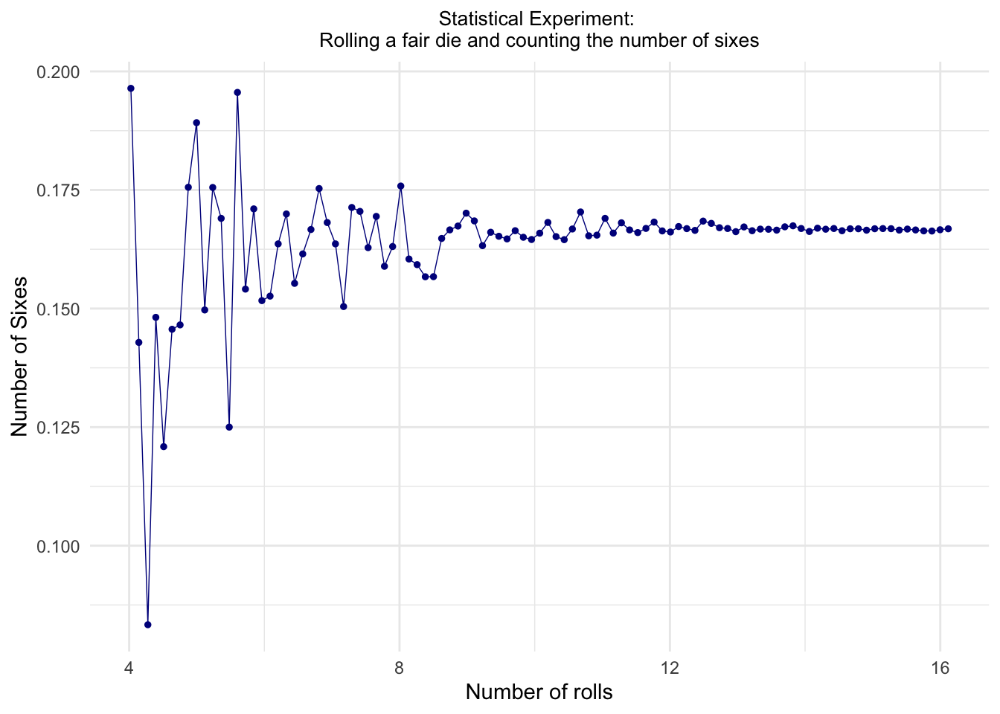
From the scatterplot above we see how the values of ratio \(\frac{n_{\rm HITS}}{N_{\rm TRIES}}\) converge towards the predicted theoretical probability of 16.666…% as \(N_{\rm TRIES}\rightarrow\infty\).
But, is there a way to calculate theoretical probability exactly?
2. \(\sigma\)-Algebra of Events and Theoretical Probability
In order to be able to speak properly about theoretical probability (and be able to compute it), we need to introduce \(\sigma\)-algebra of events and probability-as-a-measure. We can consider \(\sigma\)-algebra of events as a family of sets where every set is an event, and every element of this event-set is an outcome for which consider the evenet realized, i.e. a favorable outcome.
For example, if we toss a coin two times, then one event-set might be
\[ A - {\rm Landed\ 1\ Heads\ and\ 1\ Tails}, \]
and its elements are
\[ A = \{HT, TH\}.\]
A set of all the possible outcomes for a given experiment/observation is called the universal set. It is denoted by \(\Omega\) and it is the set upon which \(\sigma\)-algebra of events is built upon, from the subsets \(A\subset\Omega\) of the universal set.
For tossing a coin two times we have
\[ \Omega = \{HH, HT, TH, TT\},\]
and obviously
\[ A \subset \Omega. \]
\[1^\circ\quad \emptyset,\ \Omega \in \Sigma\]
\[2^\circ\quad A^C \in \Sigma\]
\[3^\circ\quad A\cup B \in \Sigma\]
\[4^\circ\quad A\cap B \in \Sigma.\]
What do these cryptic messages even mean? Let’s explain them one by one, I promise they make sense.
\[1^\circ\quad \emptyset,\ \Omega \in \Sigma\]
This means that the empty set \(\emptyset\) and the total set \(\Omega\) are also considered as events.
\(\emptyset\) is called an impossible event, and it does not contain any (possible) outcome.
\(\Omega\), viewed as an event is called certain event - getting any outcome from all the possible outcomes is definitely a certain event.
\[2^\circ\quad A^C \in \Sigma\]
An complementary set of \(A\): \(A^C = \Omega\setminus A\) is also considered as an event. Every unfavourable outcome of \(A\) is favourable for \(A^C\) (and vice versa). So, for the event \(A\) as defined above, we have:
\[ A^C = \{HH, TT\}. \]
\[3^\circ\quad A\cup B \in \Sigma\]
A union of two events (denoted also as \(A + B\)) is also considered as an event. But what is a union of two events actually? We say that the event \(A\cup B\) is realized when at least one of the events \(A\) OR \(B\) is realized. \(A\cup B\) contains all the outcomes which are favourable for either the event \(A\) OR event \(B\).
For example, if we define event \(B\) as
\[B - {\rm Landed\ 2\ Tails,}\]
we have
\[ A\cup B = \{HT, TH, TT\}.\]
\[4^\circ\quad A\cap B \in \Sigma.\]
An intersection of two events (denoted also as AB) is also considered as an event. We say that the event \(AB\) is realized when both events \(A\) AND \(B\) are simultaneously realized. \(AB\) contains all the outcomes which are favourable for both events \(A\) AND \(B\).
For examle, if we define event \(C\) as
\[ C - {\rm Tails\ in\ the\ first\ coin\ toss}, \]
we have
\[ AC = \{HT, TH\} \cap \{TH, TT\} = \{TH\}.\]
Two events \(A\) and \(B\) are mutually exclusive or disjoint if \(A\cap B = \emptyset\), i.e. if realization of both events simultaneously is an impossible event.
Two events \(A\) and \(B\) are independant if the outcome of one event does not influence the outcome of the other. For example, when tossing a coin two times, the result of the first toss does not influence the outcome of the second.
One more importan notion is the elementary event - an event containing a single possible outcome. So, for tossing our coin two times, elementary events are: \(\{HH\},\ \{HT\},\ \{TH\}\) and \(\{TT\}\).
\(\sigma\)-algebras of events serve us as a brige between the natural language by which we describe events and their outcomes with formal mathematical language to describe them via sets, their elements and set operations. The upside of mathematical objects is that it is natural to impose some measure on them, and now we can measure the events, i.e. measure the probability of event realization. So we can define probability-as-a-measure, that is a mapping \(P\) from \(\sigma\)-algebra of events to interval a set of real numbers via following set of axioms (known as Kolmogorov Axioms):
Axiom 1: For any event \(A\) we have
\[ P(A)\geqslant 0.\]
Axiom 2: For certain event \(\Omega\) we have
\[ P(\Omega) = 1.\]
Axiom 3: For mutually exclusive events \(A_1, A_2, \ldots, A_n, \ldots\) we have
\[P\Big(\bigcup_{i=1}^{\infty}A_i\Big) = \sum_{i=1}^{\infty}P(A_i).\]
What do those axioms tell us?
Axiom 1 means that the probability of any event has to be some non-negative real number; in other words - we cannot have negative probability (the same way we cannot have negative length, surface or volume - which are also measures of some kind)
Axiom 2 says that the probability of a certain event is 1 (or 100%). As we know that \(\Omega\), viewed as a set, is a universal set, i.e. set that contains all the possible outcomes - this axiom also tells us that the probability of observing any outcome of all possible defined outcomes is equal to 1.
If we want to compute a probability of some union of mutually exclusive events, Axiom 3 tells us that we can do that just by summing the probabilities of every single event.
And here’s a nice reminder for \(\sigma\)-algebras and Kolmogorov Axioms:
 These axioms have very usefull
consequences; if \(A\) and \(B\) are two events, we have:
These axioms have very usefull
consequences; if \(A\) and \(B\) are two events, we have:
\[ 1^\circ\ P(\emptyset) = 0, \]
\[ 2^\circ\ 0 \leqslant P(A) \leqslant 1, \]
\[ 3^\circ\ P(A^C) = 1 - P(A), \]
\[ 4^\circ\ A\subseteq B \Rightarrow P(A) \leqslant P(B).\]
\[ 5^\circ\ A,\ B\ {\rm indep.} \Rightarrow P(AB) = P(A)P(B).\]
Let’s now go over these consequences.
\[ 1^\circ\ P(\emptyset) = 0 \]
We saw that impossible event is represented by \(\emptyset\). So, this tells us that the probability of an impossible event is 0.
\[ 2^\circ\ 0 \leqslant P(A) \leqslant 1 \]
Not only that the probability of an event is some non-negative real number - it’s a real number belonging to the interval [0, 1]; and the endpoints of this interval correspond to the impossible event (\(P(\emptyset) = 0\)) and certain event (\(P(\Omega) = 1\)). The closer the probability is to 1, the more probable is the realization of an event. This also alows us to speak about probabilities in terms of percents.
\[ 3^\circ\ P(A^C) = 1 - P(A) \]
This tells us how to simply calculate probability of a complementary event. If a probability of an event happening is 22%, then the probability of it NOT happening is 78%.
\[4^\circ\ A\subseteq B \Rightarrow P(A) \leqslant P(B) \]
If set \(A\) is contained in set \(B\), i.e. if all the outcomes favourable for event \(A\) are also favourable for event \(B\), then event \(A\) has smaller (or equal) chances for realization than the event \(B\). In other words - events with smaller set of favourable outcomes are less probable.
\[ 5^\circ\ A,\ B\ {\rm indep.} \Rightarrow P(AB) = P(A)P(B).\]
If two events are independant, then the probability of them both occuring is equal to the product of probabilites of each event occuring independantly. If we toss a coin two times, we can calculate
\[P(HT) = P(H)P(T).\]
All this talk about the Probability Theory, but we still haven’t figured out how to calculate theoretical probability. Don’t worry, we are almost there - and we have all the ingredients to write a formula that stems quite naturally from the theoretical foundations above.
As we saw, probabilty of an event should be some number between 0 and 1, with probabilities of impossible and certain event as extreme values. And the bigger the event/set is, the biger its probability should be. This leads us to define theoretical probability of an event (\(A\)) via the following simple formula:
\[P(A) = \frac{|A|}{|\Omega|} = \frac{{\rm No.\ of\ all\ the\ favourable\ outcomes\ for}\ A}{{\rm No.\ of\ all\ the\ possible\ outcomes}}.\]
(\(|A|\) is the cardinality of a set, i.e. a number of elements that set has.)
One can easily check that formula for the probability, as given above, satisfies all the Kolmogorov Axioms and, of course, all the listed consequences.
Now that we have the ‘formula for probability’ we can easily calculate probabilities of the events listed at the beginning of this notebook.
- Probability of landing Tails on a coin toss:
\[P(T) = \frac{|\{T\}|}{|\{H, T\}|} = \frac{1}{2}.\]
- Probability of landing at least one Tails on two coin tosses (event \(A\)):
\[P(A) = \frac{|\{TH, HT, TT\}|}{|\{HH, TH, HT, TT\}|} = \frac{3}{4}.\]
- Probability of getting 6 when rolling a six-sided die:
\[P(X = 6) = \frac{|\{6\}|}{|\{1, 2, 3, 4, 5, 6\}|} = \frac{1}{6}.\]
- Probability of getting less than 5 when rolling a six-sided die:
\[P(X < 5) = \frac{|\{1, 2, 3, 4\}|}{|\{1, 2, 3, 4, 5, 6\}|} = \frac{4}{6} = \frac{2}{3}.\]
- Probability of getting any number from 1 to 6 when rolling a six-sided die:
\[P(1\leqslant X\leqslant 6) = \frac{|\{1, 2, 3, 4, 5, 6\}|}{|\{1, 2, 3, 4, 5, 6\}|} = \frac{6}{6} = 1.\]
- Probability of getting a 7 when rolling a six-sided die:
\[P(X = 7) = \frac{|\emptyset|}{|\{1, 2, 3, 4, 5, 6\}|} = \frac{0}{6} = 0.\]
- Probability of getting 6 or 7 when rolling a 20-sided die:
\[P(\{X=6\}\cup\{X=7\}) = P(X=6) + P(X=7) = \frac{1}{20} + \frac{1}{20} = \frac{2}{20} = \frac{1}{10}.\]
- Probability of getting less than 19 when rolling a 20-sided die:
\[P(X < 19) = 1 - P(\{X < 19\}^C) = 1 - P(X\geqslant 19) = 1 -\frac{|\{19, 20\}|}{|\{1, 2, \ldots, 20\}|} = 1 - \frac{2}{20} = \frac{18}{20} = \frac{9}{10}.\]
- Probability of getting two sixes in two dice rolls:
\[P(\{X_1 = 6\}\cap\{X_2 = 6\}) = P(\{X_1 = 6\})P(\{X_2 = 6\}) = \frac{1}{6}\cdot\frac{1}{6} = \frac{1}{36}.\]
- Probability of drawing an Ace from a deck of cards:
cat('P(X = A) = |{\U0001F0A1, \U0001F0B1, \U0001F0C1, \U0001F0D1}|/|Whole Deck of Cards| = 4/52 = 1/13.')## P(X = A) = |{🂡, 🂱, 🃁, 🃑}|/|Whole Deck of Cards| = 4/52 = 1/13.Even though we have a tool to calculate probability of an event exactly, we shouldn’t forget about experimental probability. First, it can serve us to experimentally check our theoretical calculation. Secondly, and more important: sometimes calculating theoretical probability is difficult, or even impossible; so, performing the experiments and noting down the results is a way to obtain the probability of an event.
While we’ve been using the given formula for calculating theoretical probabilities, there was actually one important thing that we hid under the rug - the formula works only in case when \(\Omega\) is finite set. But what if \(\Omega\) is infinite? Does all this mathematical construction breaks down? Actually no. \(\sigma\)-algebras, Kolmogorov Axioms and their consequences actually give us tools to handle even infinite \(\Omega\)s, and we’ll see how later on.
But first let’s talk about random variables.
3. Random variable: a Discrete Type
When we were calculating theoretical probabilities a bit above we introduced the following notation \(P(X = 6)\) or \(P(X \geqslant 19)\). What is this \(X\)? It is actually a random variable (RV) - a varable which can take one of the several different values, each with its own probability.
There are two types of random variables: discrete and (absolutely) continuous. Values of RV are elements, i.e. outcomes of set \(\Omega\). If \(\Omega\) is finite or countably infinite, then associated RV is discrete. If \(\Omega\) is uncountably infinite, then the corresponding RV is continuous.
We’ll speak about discrete RVs now.
A discrete random variable is fully described if we know all the values it can take, and all the probabilities corresponding to those values. This ‘description’ of a random variable is called its distribution. So, ‘knowing’ a random variable is equivalent to ‘knowing’ its distribution.
For tossing a coin, a random variable \(X\) can take two values: Heads and Tails, each with probability \(\frac{1}{2}\). We can write its distribution as
\[ X : \begin{pmatrix} H & T\\ \frac{1}{2} & \frac{1}{2} \end{pmatrix}.\]
This ‘function’ which assigns a probability to each outcome is also called probability mass function or p.m.f.
For rolling a six sided die, we have a random variable which can take some of the values from the die given with p.m.f
\[ X : \begin{pmatrix} 1 & 2 & 3 & 4 & 5 & 6\\ \frac{1}{6} & \frac{1}{6} & \frac{1}{6} & \frac{1}{6} & \frac{1}{6} & \frac{1}{6} \end{pmatrix}.\]
We can even define RVs on our own. The only important thing is that all the probabilites in its distribution need to sum to 1 (as the union of all elementary events, i.e. of every possible outcome gives \(\Omega\), and \(P(\Omega) = 1\)).
For example:
\[ X : \begin{pmatrix} -1 & 0 & 2 & 4.7\\ 0.2 & 0.05 & 0.45 & 0.3 \end{pmatrix}.\]
We can simulate the outcomes of this RV using
sample():
choices <- c(-1, 0, 2, 4.6)
sample(choices, size = 1, prob = c(.2, .05, .45, .3))## [1] 0choices <- c(-1, 0, 2, 4.6)
result <- sample(choices, size = 100, prob = c(.2, .05, .45, .3), replace = TRUE)
result## [1] 2.0 2.0 2.0 -1.0 -1.0 -1.0 2.0 2.0 2.0 2.0 -1.0 4.6 2.0 2.0 4.6 2.0 2.0 4.6 -1.0
## [20] 4.6 4.6 -1.0 2.0 4.6 4.6 -1.0 4.6 4.6 2.0 4.6 -1.0 4.6 4.6 2.0 2.0 4.6 0.0 0.0
## [39] -1.0 -1.0 -1.0 4.6 4.6 4.6 4.6 -1.0 -1.0 0.0 0.0 -1.0 2.0 2.0 2.0 -1.0 4.6 2.0 4.6
## [58] 2.0 2.0 -1.0 -1.0 4.6 4.6 2.0 4.6 4.6 4.6 -1.0 4.6 0.0 2.0 2.0 4.6 4.6 2.0 2.0
## [77] 2.0 2.0 2.0 -1.0 2.0 2.0 2.0 4.6 4.6 4.6 2.0 -1.0 -1.0 0.0 4.6 4.6 4.6 2.0 2.0
## [96] 2.0 2.0 -1.0 2.0 2.0result_frame <- as.data.frame(table(result))
result_frame## result Freq
## 1 -1 22
## 2 0 6
## 3 2 39
## 4 4.6 33ggplot(result_frame,
aes(x = result,
y = Freq,
color = result,
fill = result)) +
geom_bar(stat = "identity") +
xlab("Values") + ylab("Frequency") +
theme_minimal() +
ggtitle("Statistical Experiment\nSome discrete distribution that I have made up") +
theme(plot.title = element_text(hjust = .5, size = 10)) +
theme(legend.position = "none")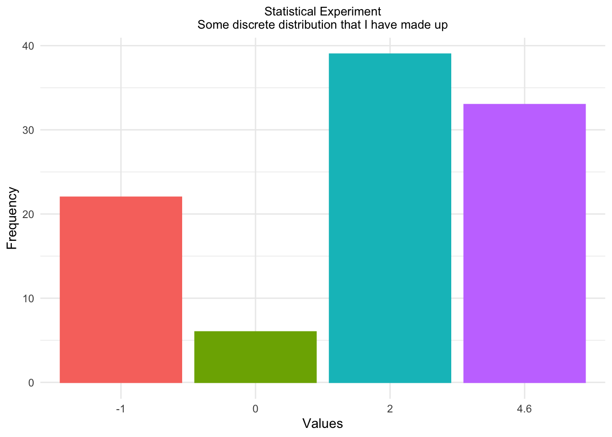
Let’s assume we have a following discrete random variable which can take infinitely many values:
\[ X : \begin{pmatrix} 1 & 2 & \cdots & k & \cdots \\ p_1 & p_2 & \cdots & p_k & \cdots & \end{pmatrix}.\]
Using its distribution, we can calculate probabilities of some events in the following manner (which also applies for finite RVs):
\[ P(X = k) = p_k \]
\[ P(X \leqslant k) = p_1 + p_2 + \cdots + p_k \]
\[ P(X < k) = P(X \leqslant k - 1) = p_1 + p_2 + \cdots + p_{k-1} \]
\[ P(3 \leqslant X \leqslant k) = p_3 + p_4 + \cdots + p_k \]
\[ P(X > k) = 1 - P(X \leqslant k) = 1 - (p_1 + p_2 + \cdots + p_k) \]
Probability \(P(X\leqslant k)\) is quite an important one - it even has it’s name cumulative distribution function or c.d.f.. It’s denoted by \(F(k)\), and it simply sums all the probabilities for all values up to \(k\):
\[ F : \begin{pmatrix} 1 & 2 & 3 & \cdots & N\\ p_1 & p_1 + p_2 & p_1 + p_2 + p_3 & \cdots & 1 \end{pmatrix}.\]
4. Discrete Type Distributions
Random or stochastic processes are not just some mathematical intellectual plaything. They occur all around us and within us. Many stochastic natural and social phenomena behave according to some distribution, and can be modelled according to that distribution. Here we go through some of those important discrete-type distributions.
Bernoulli Distribution
The simplest discrete distribution is Bernoulli Distribution - it’s a distribution of a RV that has binary outcomes - yes/no, hit/miss or success/failure. The parameter of this distribution is \(p\) - the probability of ‘hit’. This distribution looks like:
\[ X : \begin{pmatrix} 0 & 1\\ 1 - p & p \end{pmatrix}.\]
To sample from Bernoulli Distribution we can use
sample() with two outcomes. Say, we have a population that
gives a ‘yes’ answer to some question in 2/3 cases and ‘no’ in 1/3
cases, and we want to draw a sample of 100 from it. Here’s a sample:
X = c('yes', 'no')
no_tries = 100
outcomes = sample(X, prob = c(2/3, 1/3), size = no_tries, replace = TRUE)
no_outcomes = as.data.frame(table(outcomes))
ggplot(no_outcomes,
aes(x = outcomes,
y = Freq,
color = outcomes,
fill = outcomes)) +
geom_bar(stat = "identity") +
xlab("Outcomes") + ylab("Frequency") +
theme_minimal() +
ggtitle("Bernoulli's Statistical Experiment") +
theme(plot.title = element_text(hjust = .5, size = 10)) +
theme(legend.position = "none")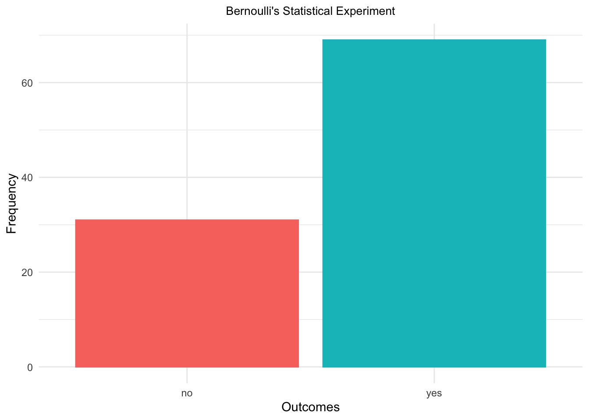
Binomial Distribution
Binomial distribution gives an answer to the following question: what’s the probability of getting \(k\) hits in \(n\) trials of the same hit/miss experiment, having probability of hit equal to \(p\)?
Binomial Distribution has two parameters:
- \(n\): number of repetitions of the same experiment
- \(p\): probability of a hit (success)
If a random variable \(X\) has a Binomial Distribution with parameters \(n\) and \(p\), we write that
\[ X \sim \mathcal{B}(n, p).\]
For example, we’d like to know what’s the probability of landing 7
Heads in tossing a coin 10 times. We can approximate this probability by
sampling from the Binomial Distribution with parameters \(n=10\) and \(p=0.5\) (\(\mathcal{B}(100, 0.5)\)), using
rbinom().
outcomes = rbinom(n = 100, prob = .5, size = 10)
outcomes## [1] 7 5 4 6 4 3 6 6 8 5 7 6 7 4 5 8 0 9 5 5 6 7 4 5 6 6 3 5 5 4 7 4 9 4 6 5 4 4 2 8 3 8 7 3 1 4 4
## [48] 5 7 7 6 5 4 6 5 5 5 7 2 5 7 5 5 6 4 6 4 4 4 5 6 7 7 6 8 5 3 4 4 6 6 4 6 5 6 5 7 6 7 4 6 6 7 4
## [95] 3 5 5 5 5 6no_outcomes = as.data.frame(table(outcomes))
ggplot(no_outcomes,
aes(x = outcomes,
y = Freq)) +
geom_bar(stat = "identity", color = "darkblue", fill = "white") +
xlab("Outcomes") + ylab("Frequency") +
theme_minimal() +
ggtitle("Binomial Statistical Experiment") +
theme(plot.title = element_text(hjust = .5, size = 10)) +
theme(legend.position = "none")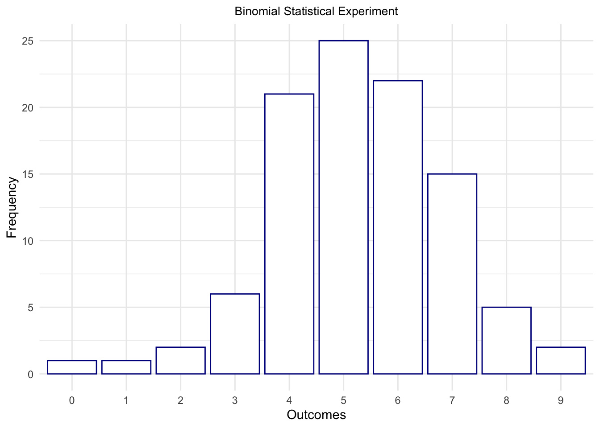
We can actually calculate theoretical Binomial probabilities, via
\[P(X = k) = \binom{n}{k}p^k(1-p)^{n-k},\]
where \(\binom{n}{k}\), called binomial coefficient, is
\[\binom{n}{k} = \frac{n!}{k!(n-k)!}.\]
Say we have some unfair coin which lands Tails with probability 0.25, and we toss it three times. Using the formula above for \(\mathcal{B}(3, 0.25)\) we obtain the probabilities for number of Tails in 3 tosses \(X\):
\[ X : \begin{pmatrix} 0 & 1 & 2 & 3\\ 0.421875 & 0.421875 & 0.140625 & 0.015625 \end{pmatrix}.\]
Interlude: Functions to work with probability in R
Consider the following experiment: a person rolls a fair dice ten times. Q. What is the probability of obtaining five or less sixes at random?
We know that R’s dbinom() represents the binomial
probability mass function (p.m.f.). Let’s see: the probability of
getting exactly five sixes at random is:
pFiveSixes <- dbinom(5, size = 10, p = 1/6)
pFiveSixes## [1] 0.01302381Do not be confused by our attempt to model dice rolls by a binomial distribution: in fact, there are only two outcomes here, “6 is obtained” with \(p=1/6\) and “everything else” with \(1−p=5/6\)!
Then, the probability of getting five or less than five sixes from ten statistical experiments is:
pFiveAndLessSixes <- sum(
dbinom(0, size = 10, p = 1/6),
dbinom(1, size = 10, p = 1/6),
dbinom(2, size = 10, p = 1/6),
dbinom(3, size = 10, p = 1/6),
dbinom(4, size = 10, p = 1/6),
dbinom(5, size = 10, p = 1/6)
)
pFiveAndLessSixes## [1] 0.9975618in order to remind ourselves that the probabilities of all outcomes from a discrete probability distribution - in our case, that “0 sixes”, “1 six”, “2 sixes”, “3 sixes”, “4 sixes”, or “5 sixes” etc. obtain - will eventually sum up to one. However, let’s wrap this up elegantly by using sapply()
pFiveAndLessSixes <- sum(sapply(seq(0,5), function(x) {
dbinom(x, size = 10, p = 1/6)
}))
pFiveAndLessSixes## [1] 0.9975618or, even better, by recalling that we are working with a vectorized programming language:
pFiveAndLessSixes <- sum(dbinom(seq(0,5), size = 10, p =1/6))
pFiveAndLessSixes## [1] 0.9975618Of course, we could have used the cumulative distribution function* (c.d.f) to figure out this as well:
pFiveAndLessSixes <- pbinom(5, size = 10, p = 1/6)
pFiveAndLessSixes## [1] 0.9975618Random Number Generation from the Binomial
rbinom() will provide a vector of random deviates from
the Binomial distribution with the desired parameter, e.g.:
# Generate a sample of random binomial variates:
randomBinomials <- rbinom(n = 100, size = 1, p = .5)
randomBinomials## [1] 1 0 1 0 0 0 1 0 1 0 0 1 1 1 0 1 1 0 0 0 1 1 0 0 1 0 0 0 0 0 1 1 0 1 1 1 1 1 0 0 0 1 0 0 1 0 0
## [48] 1 0 0 1 0 0 0 0 1 1 0 0 1 1 0 0 0 1 1 1 0 0 0 1 0 1 1 1 0 1 0 1 0 0 0 1 1 1 0 0 0 1 1 0 0 0 1
## [95] 0 1 1 0 0 1Now, if each experiment encompasses 100 coin tosses:
randomBinomials <- rbinom(n = 100, size = 100, p = .5)
randomBinomials # see the difference?## [1] 46 52 50 42 53 51 49 43 45 49 57 52 61 61 58 49 51 49 42 46 45 48 48 49 50 48 53 49 52 50 46
## [32] 55 49 50 53 50 52 48 51 45 48 55 61 49 53 53 46 42 56 57 47 50 46 51 42 48 60 46 53 51 48 46
## [63] 47 50 44 49 60 51 46 46 49 47 51 47 40 51 48 48 49 55 50 48 53 48 50 54 53 49 43 65 48 51 45
## [94] 50 53 47 44 51 44 50randomBinomials <- rbinom(n = 100, size = 10000, p = .5)
randomBinomials## [1] 4935 5020 5015 5064 5007 4988 4949 5010 5042 4924 5041 5021 5000 4992 4922 5058 4969 4888 5105
## [20] 4960 5038 5020 4923 5028 4920 4977 4997 4972 4955 5039 5104 5002 5024 4937 4986 5063 5038 4974
## [39] 4968 4984 4981 5064 4972 5004 5037 5055 4950 4952 4996 4991 5089 5054 4981 4985 5000 4939 5032
## [58] 5010 4989 4998 4976 5058 5140 5008 4929 5057 4972 4968 4923 5053 4975 4983 5043 4991 5053 5022
## [77] 5084 5052 5028 4941 5072 5052 5001 4999 5008 5038 4979 5050 4959 5053 4956 5043 5059 5043 5099
## [96] 4971 4955 4967 5023 5052Let’s plot the distribution of the previous experiment:
randomBinomialsPlot <- data.frame(success = randomBinomials)
ggplot(randomBinomialsPlot,
aes(x = success)) +
geom_histogram(binwidth = 10,
fill = 'white',
color = 'darkblue') +
theme_minimal() +
theme(panel.border = element_blank())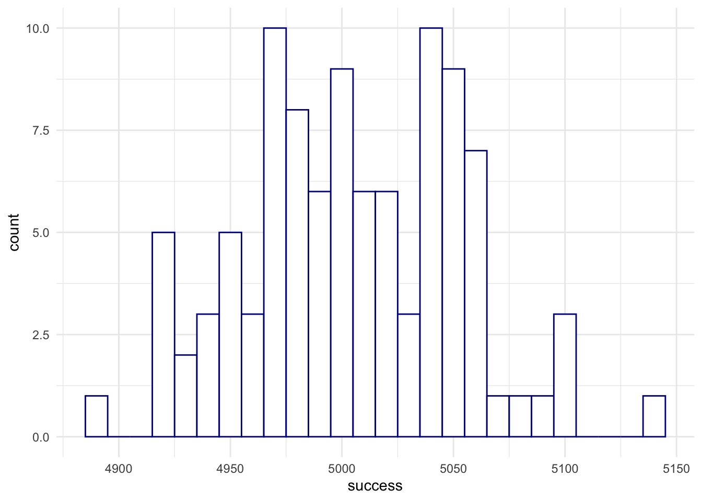
Interpretation: we were running 100 statistical experiments, each time drawing a sample of 10000 observations of a fair coin (\(p=.5\)). And now,
randomBinomials <- rbinom(100000, size = 100000, p = .5)
randomBinomialsPlot <- data.frame(success = randomBinomials)
ggplot(randomBinomialsPlot,
aes(x = success)) +
geom_histogram(binwidth = 10,
fill = 'white',
color = 'darkblue') +
theme_minimal() +
theme(panel.border = element_blank())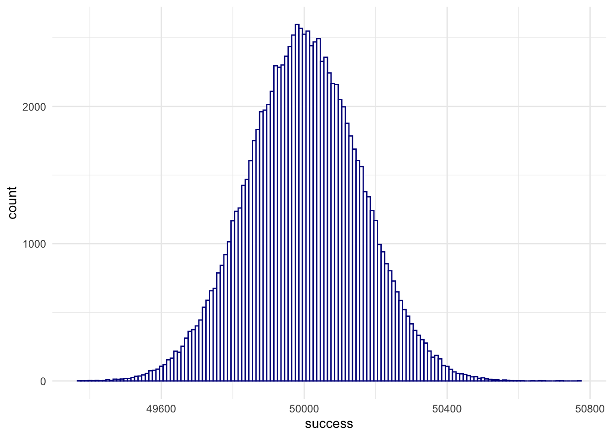
… we were running 10000 statistical experiments, each time drawing a sample of 100000 observations of a fair coin (\(p=.5\)).
So, we have the Probability Mass Function (p.m.f):
heads <- 0:100
binomialProbability <- dbinom(heads, size = 100, p = .5)
sum(binomialProbability)## [1] 1Where sum(binomialProbability) == 1 is TRUE
because this is a discrete distribution so its Probability Mass
Functions outputs probability indeed!
binomialProbability <- data.frame(heads = heads,
density = binomialProbability)
ggplot(binomialProbability,
aes(x = heads,
y = density)) +
geom_bar(stat = "identity",
fill = 'white',
color = 'darkblue') +
ggtitle("Binomial P.M.F.") +
theme_minimal() +
theme(panel.border = element_blank()) +
theme(plot.title = element_text(hjust = .5, size = 10))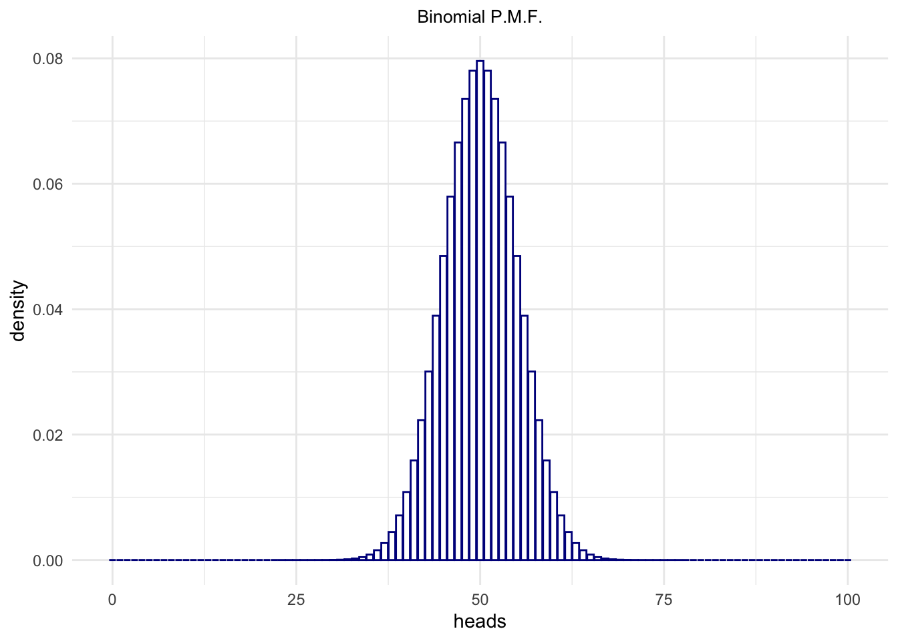
The Cumulative Distribution Function (c.d.f), on the other hand:
heads <- 1:100
binomialProbability <- pbinom(heads, size = 100, p = .5)
sum(binomialProbability)## [1] 51binomialProbability <- data.frame(heads = heads,
cumprob = binomialProbability)
ggplot(binomialProbability,
aes(x = heads,
y = cumprob)) +
geom_bar(stat = "identity",
fill = 'white',
color = 'darkblue') +
ylab("P(heads <= x)") +
ggtitle("Binomial C.D.F.") +
theme_minimal() +
theme(panel.border = element_blank()) +
theme(plot.title = element_text(hjust = .5, size = 10))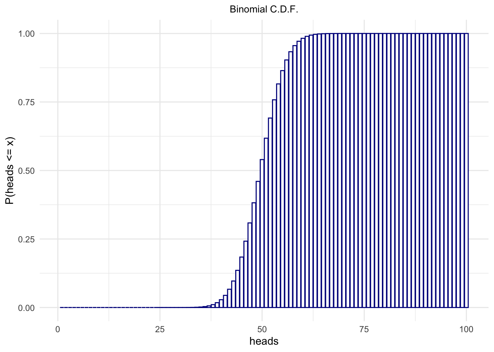
Quantile Function of the Binomial distribution
The quantile is defined as the smallest value \(x\) such that \(F(x)\geq p\), where \(F\) is the cumulative distribution function (c.d.f.):
qbinom(p = .01, size = 100, prob = .5)## [1] 38qbinom(p = .99, size = 100, prob = .5)## [1] 62qbinom(p = .01, size = 200, prob = .5)## [1] 84qbinom(p = .99, size = 200, prob = .5)## [1] 116Similarly, we could have obtained \(Q_1\), \(Q_3\), and the median, for say n of 100
(that is size in qbinom()) and \(p\) of \(.5\) (that is prob in
qbinom()):
qbinom(p = .25, size = 100, prob = .5)## [1] 47qbinom(p = .5, size = 100, prob = .5)## [1] 50qbinom(p = .75, size = 100, prob = .5)## [1] 53qbinom(p = .25, size = 1000, prob = .5)## [1] 489Here are some examples of the binomial distribution in nature and society:
Coin Flips: When flipping a fair coin multiple times, the number of heads obtained follows a binomial distribution. Each flip is an independent trial with two outcomes (heads or tails) and an equal probability of success (0.5 for a fair coin).
Product Quality Control: In manufacturing processes, the number of defective items in a production batch can often be modeled using a binomial distribution. Each item is inspected independently, and it is classified as either defective or non-defective based on predetermined criteria.
Election Outcomes: In a two-party political system, the distribution of seats won by each party in a series of elections can be modeled using a binomial distribution. Each election is treated as an independent trial with two possible outcomes (win or loss) and a fixed probability of success for each party.
Medical Trials: Clinical trials often involve testing the effectiveness of a treatment or medication on a group of patients. The binomial distribution can be used to model the number of patients who respond positively to the treatment, where each patient is considered a trial with a fixed probability of response.
Sports Performance: The success rate of an athlete in a specific type of action, such as free throws in basketball or penalty kicks in soccer, can be modeled using a binomial distribution. Each attempt represents an independent trial with two outcomes (success or failure) and a fixed probability of success for the athlete.
Genetic Inheritance: The transmission of certain genetic traits from parents to offspring can be modeled using a binomial distribution. For example, the probability of a child inheriting a specific allele from a heterozygous parent follows a binomial distribution.
Survey Responses: In opinion polls or market research surveys, the distribution of responses to a yes-or-no question can be modeled using a binomial distribution. Each participant provides a single response, which can be categorized as either a success (yes) or failure (no) outcome.
Poisson Distribution
Poisson is a discrete probability distribution with mean and variance correlated. This is the distribution of the number of occurrences of independent events in a given interval.
The p.m.f. is given by:
\[{P(X=k)} = \frac{\lambda^{k}e^{-\lambda}}{k!}\] where \(\lambda\) is the average number of events per interval, and \(k = 0, 1, 2,...\)
For the Poisson distribution, we have that the mean (the expectation) is the same as the variance:
\[X \sim Poisson(\lambda) \Rightarrow \lambda = E(X) = Var(X) \]
Example. (Following and adapting from Ladislaus Bortkiewicz, 1898). Assumption: on the average, 10 soldiers in the Prussian army were killed accidentally by horse kick monthly. What is the probability that 17 or more soldiers in the Prussian army will be accidentally killed by horse kicks during the month? Let’s see:
tragedies <- ppois(16, lambda=10, lower.tail=FALSE) # upper tail (!)
tragedies## [1] 0.02704161Similarly as we have used pbinom() to compute cumulative
probability from the binomial distribution, here we have used
ppois() for the Poisson distribution. The
lower.tail=F argument turned the cumulative into a
decumulative (or survivor) function: by calling
ppois(17, lambda=10, lower.tail=FALSE) we have asked not
for \(P(X \leq k)\), but for \(P(X > k)\) instead. However, if this is
the case, than our ppois(16, lambda=10) answer would be
incorrect, and that is why we called:
ppois(16, lambda=10, lower.tail=FALSE) instead. Can you see
it? You have to be very careful about how exactly your probability
functions are defined (c.f. Poisson {stats} documentation
at (https://stat.ethz.ch/R-manual/R-devel/library/stats/html/Poisson.html)
and find out whether lower.tail=T implies \(P(X > k)\) or \(P(X \geq k)\)).
# Compare:
tragedies <- ppois(17, lambda=10, lower.tail=TRUE) # lower tail (!)
tragedies## [1] 0.9857224This ^^ is the answer to the question of what would be the probability of 17 and and less than 17 deaths.
The same logic to generate random deviates as we have observed in the
Binomial case is present here; we have rpois():
poissonDeviates <- rpois(100000,lambda = 5)
poissonDeviates <- data.frame(events = poissonDeviates)
ggplot(poissonDeviates,
aes(x = events)) +
geom_histogram(binwidth = 1,
fill = 'white',
color = 'darkorange') +
ggtitle("Poisson Distribution") +
theme_minimal() +
theme(panel.border = element_blank()) +
theme(plot.title = element_text(hjust = .5, size = 10))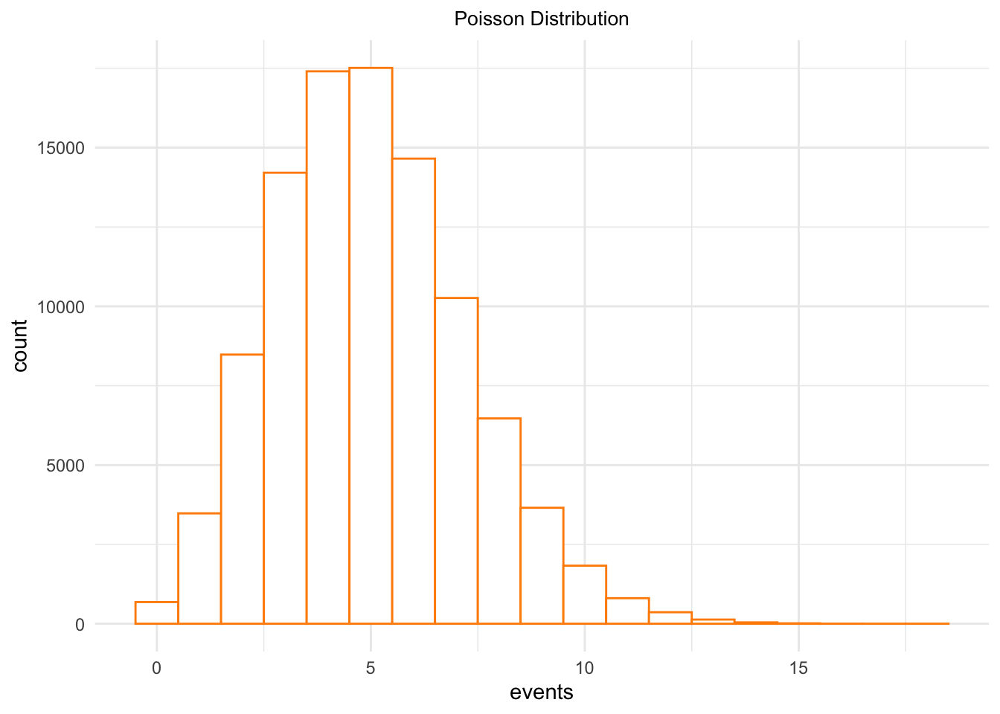
Observe how the shape of the Poisson distribution changes with its mean and variance, both represented as \(\lambda\):
lambda <- 1:20
poissonDeviates <- lapply(lambda, rpois, n = 1000)
poissonDeviates <- reduce(poissonDeviates, rbind)
dim(poissonDeviates)## [1] 20 1000Ok, then:
poissonDeviates <- as.data.frame(poissonDeviates)
poissonDeviates$id <- 1:dim(poissonDeviates)[1]
poissonDeviates <- poissonDeviates %>%
pivot_longer(cols = -id) %>%
select(-name)
poissonDeviates$id <- factor(poissonDeviates$id,
levels = sort(unique(poissonDeviates$id)))and finally:
ggplot(poissonDeviates,
aes(x = value)) +
geom_histogram(binwidth = 1,
fill = 'white',
color = 'darkorange') +
xlab("Events") +
ggtitle(expression(lambda)) +
facet_wrap(~id, scales = "free_x") +
theme_minimal() +
theme(panel.border = element_blank()) +
theme(strip.background = element_blank()) +
theme(strip.text = element_text(size = 12)) +
theme(plot.title = element_text(hjust = .5, size = 20))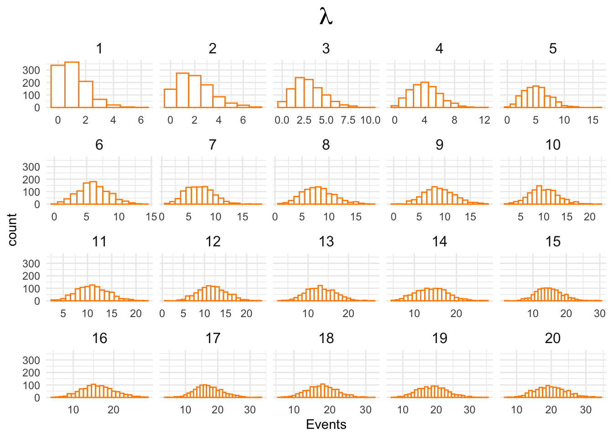
Let’s study one important property of the Poisson distribution:
lambda <- 1:100
poissonMean <- sapply(lambda, function(x) {
mean(rpois(100000,x))
})
poissonVar <- sapply(lambda, function(x) {
var(rpois(100000,x))
})
poissonProperty <- data.frame(mean = poissonMean,
variance = poissonVar)
ggplot(poissonProperty,
aes(x = mean,
y = variance)) +
geom_line(color = "darkorange", size = .25) +
geom_point(color = "darkorange", fill = "darkorange", size = 1.5) +
xlab("E(X)") + ylab("Var(X)") +
ggtitle("Poisson Distribution\nThe Mean is equal to Variance") +
theme_minimal() +
theme(panel.border = element_blank()) +
theme(plot.title = element_text(hjust = .5, size = 10))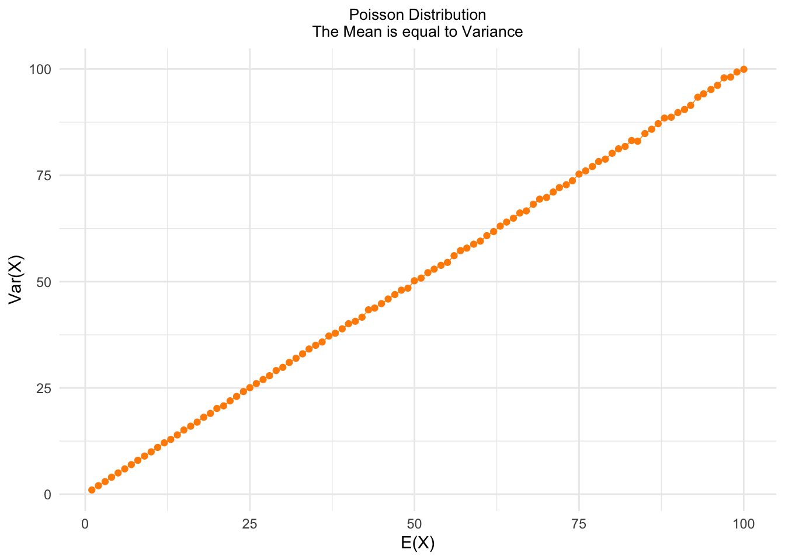
Here are some examples of how the Poisson distribution can be observed in various contexts:
Natural Disasters: The occurrence of earthquakes, volcanic eruptions, or meteorite impacts can be modeled using a Poisson distribution. While these events are rare, they tend to follow a pattern of random occurrence over time.
Traffic Accidents: The frequency of traffic accidents at a particular intersection or along a specific road can often be approximated by a Poisson distribution. The assumption is that accidents happen randomly, and the number of accidents in a given time period follows a Poisson distribution.
Phone Calls to a Call Center: The number of incoming phone calls to a call center during a specific time interval can often be modeled using a Poisson distribution. Even though call volumes may vary, they tend to follow a pattern of random occurrence throughout the day.
Radioactive Decay: The decay of radioactive particles follows a Poisson distribution. Each particle has a fixed probability of decaying within a given time period, and the number of decays within that time period follows a Poisson distribution.
Birth and Death Rates: In population studies, the number of births or deaths in a particular region over a fixed time period can be approximated using a Poisson distribution. While births and deaths may exhibit seasonal or long-term trends, the occurrences within short intervals can be modeled as random events.
Email Arrival: The arrival of emails in an inbox can often be modeled using a Poisson distribution. The assumption is that emails arrive randomly, and the number of emails received within a fixed time period can follow a Poisson distribution.
Molecular Collision Events: In physics and chemistry, the number of collision events between molecules within a given volume can be described using a Poisson distribution. This applies to scenarios such as gas diffusion or the movement of particles in a fluid.
Network Traffic: The number of packets arriving at a network router or the number of requests received by a web server within a specific time interval can often be modeled using a Poisson distribution. This is particularly useful in analyzing network congestion and capacity planning.
Defective Products: The number of defective products in a manufacturing process can be modeled using a Poisson distribution. It helps assess the quality control measures and estimate the likelihood of encountering defective items in a production batch.
Hospital Admissions: The number of patients admitted to a hospital within a given time period can often be approximated by a Poisson distribution. This information aids in resource allocation and staffing decisions.
Rare Disease Occurrence: The occurrence of rare diseases within a population can be modeled using a Poisson distribution. This distribution helps estimate the likelihood of rare diseases and evaluate the effectiveness of preventive measures or treatments.
Natural Birth Intervals: The time intervals between births in animal populations, such as a particular species of birds, can follow a Poisson distribution. This helps researchers understand reproductive patterns and population dynamics.
Insurance Claims: The number of insurance claims filed within a specific time period, such as automobile accidents or property damage claims, can often be modeled using a Poisson distribution. This assists insurers in risk assessment and pricing policies.
Arrival of Customers: The arrival of customers at a retail store or the number of customers in a queue at a bank can be approximated using a Poisson distribution. This information aids in optimizing service capacity and wait time estimation.
Molecular Events in Genetics: The occurrence of genetic mutations or recombination events in a DNA sequence can be modeled using a Poisson distribution. This helps researchers study genetic variations and evolutionary processes.
5. Random variable: a Continuous Type
We spoke about RVs that can take values from universal set \(\Omega\) which is either finit or countably infinite; these were discrete-type random variables. But what if \(\Omega\) is uncountably infinite,i.e. what if random variable \(X\) can take any real number as a value? Then we have (absolutely) continuous random variable.
As with discrete-type RVs, continuous-type RVs have their distribution. With discrete RVs we use probability mass function (p.m.f) to describe their distribution. With continuous RVs, we have probability density function (p.d.f) which ‘describes’ them. One p.d.f. \(\varphi(x)\) of a continuous random variable may look like this:
 Each p.d.f of a
continuous RV should be defined, continuous and non-negative almost
everywhere on the whole real-number line, and:
Each p.d.f of a
continuous RV should be defined, continuous and non-negative almost
everywhere on the whole real-number line, and:
\[\int_{-\infty}^{+\infty}\varphi(x)dx = 1.\]
Don’t worry about the integral - we are not going to compute integrals in this course. But we do need them to calculate probabilities for continuous RVs. The integral above tells us that the area under the curve of p.d.f. is always equal to 1. This seems familiar? This is actually completely analogous to the fact that, for discrete RV, all probabilities in its p.m.f. need always to sum to 1.
So, what’s the probability of RV, having p.d.f as in the figure above, to take value -5.5? It’s
\[P(X = -0.5) = 0.\]
OK, that kinda makes sense. But, what about the probability of taking value 0?
\[P(X = 0) = 0.\]
Wait, what? And taking value \(\sqrt{2}\)?
\[P(X = \sqrt{2}) = 0.\]
Is it always going to be zero? Yes. Because the probability of hitting a point exactly you want, out of uncountably infinitely many others is - of course, zero. But how we can calculate probabilities at all, if the probability of every point is zero? We just need to broaden our views - not to ask about the probability of hitting a single point \(x\) among ridiculously infinitely many, but to ask about the probability of hitting any point in the small interval \(\Delta x\) which contains \(x\)… and uncountably infinite many other points. When working with continuous RVs we can hope to get positive probability only if we work with intervals, no matter how big or small.
However, to get positive probabilities, those intervals need to be either fully or partially on the support of p.d.f. Support is the part of p.d.f. curve where this function is positive, i.e. \(\varphi(x) > 0\). For really small intervals \(\Delta x\) that are outside of the support, i.e. for which \(\varphi(x) = 0\), there is 0 probability for RV \(X\) to take any value from that interval. On the other hand, if we observe a really small interval \(\Delta x\) around the point where p.d.f. takes its maximal value - there is the highest probability of RV \(X\) taking values from this interval.
In other words: higher the value of \(\varphi(x)\) for some \(x\) - higher the probability of RV \(X\) getting some value from a very small interval \(\Delta x\) around \(x\). (but not in \(x\) itself; there, the probability is zero)
So, we can calculate probability of continuous RV in any interval. How do we calculate probability of RV \(X\) taking values in some interval \([a, b]\) where \(a\) and \(b\) are two numbers? Simply, using the formula:
\[P(a \leqslant X \leqslant b) = \int_a^b\varphi(x)dx.\]
It’s that integral again… And again it makes sense again. Remember that, using Kolmogorov Axioms, we defined probability as a measure? We also mentioned that integral is the measure of the area under the curve. So, using an integral to measure area under the curve of p.d.f on some interval \([a,b]\), we are actually measuring the probability of RV \(X\) to take any value from that interval.
Observing probabilites as integrals, i.e. areas of surfaces under the p.d.f curve is completely in-sync with Kolmogorov Axioms for probability-as-a-measure:
- Both probability and area are measures, and cannot be negative;
- Area of an empty set, or a point/line is zero. So is the probability;
- Bigger the area, bigger the probability; and we may encompass big areas by taking long intervals or intervals around high values of p.d.f;
- We can just sum areas of disjoint figures to get the total area; the same is for probabilities of disjoint events.
One more important point. We saw that for discrete RVs every point matters (even if it’s infinite). For some discrete RV \(X\) we have
\[P(X \leqslant k) \neq P(X < k).\]
However, this is not the case with continuous RVs; there one point doesn’t make a difference (why?). So, for some continuous RV \(X\) we have
\[P(a \leqslant X \leqslant b) = P(a \leqslant X < b) = P(a < X < b).\]
As discrete RVs have c.d.f, so continuous RVs have one as well. Cumulative distribution function for a continuous random variable is given with
\[F(a) = P(X\leqslant a) = \int_{-\infty}^a\varphi(x)dx.\]
C.d.f of a continuous RV \(X\) gives the probability of \(X\) taking any value from the interval \((-\infty, a]\). Or, area under the p.d.f curve on that interval. Here’s how one c.d.f. of a continuous RV looks like:
 C.d.f. is a prety handy tool for computing
probabilities of continuous RVs, even more useful than p.d.f! In fact,
by knowing the c.d.f we can compute probabilites while avoiding
integrals, using this formula:
C.d.f. is a prety handy tool for computing
probabilities of continuous RVs, even more useful than p.d.f! In fact,
by knowing the c.d.f we can compute probabilites while avoiding
integrals, using this formula:
\[P(a \leqslant X \leqslant b) = F(b) - F(a).\]
And we can also calculate
\[P(X \geqslant a) = 1 - P(X < a) = 1 - F(a).\]
For continuous RVs very useful is quantile function, which is the inverse of a c.d.f:
\[Q(p) = F^{-1}(p),\qquad p\in(0, 1).\]
Simply put, for \(p = 0.1\) we can get a value \(x\) for which we can expect to find 10% of points in the interval \((-\infty, x]\) when sampling from a RV \(X\) having c.d.f \(F\).
The most important values for \(p\) for the quantile functions are 0.25, 0.5 and 0.75, which give values for quartiles Q1, Q2 (median) and Q3.
Normal (or Gaussian) distribution
Normal Distribution, denoted by \(\mathcal{N}(\mu, \sigma^2)\), has two parameters:
\(\mu\): mean, which dictates the peak of the bell-curve, i.e. a point which neighbourhood should be most densly populated by samples;
\(\sigma\): standard deviation, which dictates the thickness of the bell-curve, i.e. the dispersion of the sample away from the mean.
\(\sigma^2\) which appears in the notation above is called variance.
The p.d.f for RV with Normal Distribution \(X\sim\mathcal{N}(\mu, \sigma^2)\) is given by
\[\varphi(x) = \frac{1}{\sigma\sqrt{2\pi}}e^{-\frac{1}{2}\big(\frac{x-\mu}{\sigma}\big)^2}.\]
A very special Normal Distribution is the one with \(\mathcal{N}(0, 1)\), and it’s called Standard Normal Distribution. Its p.d.f. and c.d.f. are
\[\varphi(z) = \frac{1}{\sqrt{2\pi}}e^{-\frac{z^2}{2}}\]
\[\Phi(z) = \frac{1}{\sqrt{2\pi}}\int_{-\infty}^ze^{-\frac{x^2}{2}}dx.\]
It’s integrals again… shouldn’t c.d.f relieve us of calculating integrals? Well, yes, but there’s no simpler way to represent c.d.f for Standard Normal Distribution. Luckily, every statistics and probability textbook has a table of values of \(\Phi(z)\) for various values of \(z\).
Looking at one of those tables we obtain, for \(Z\sim\mathcal{N}(0, 1)\),
\[\Phi(-2.27) = P(Z < -2.27) = 0.0116.\]
Example
Average time for delivery service to deliver food is 30 minutes, with standard deviance of 10 minutes. Asumming the time for delivery is random variable with Normal Distribution, find probability of your order arriving more than five minutes late than average.
We have \(X\sim\mathcal{N}(30, 100)\) and calculate
\[P(X > 35) = 1 - P(X\leqslant 35).\]
But wait, we don’t have c.d.f. for this Normal Distribution, because it’s not standard. Worry not, we can standardize a RV \(X\sim\mathcal{N}(\mu, \sigma)\) by applying the following transformation
\[Z = \frac{X - \mu}{\sigma}.\]
RV \(Z\) has the Standard Normal Distribution, and we can finde the value of its c.d.f. form the table. So, we continue our calculation:
\[P(X > 35) = 1 - P(X\leqslant 35) = 1 - P\Big(\frac{X - 30}{10}\leqslant \frac{35 - 30}{10}\Big) = 1 - P(Z\leqslant 0.5) = 1 - \Phi(0.5) = 1 - 0.6915 = 0.3085.\]
Now, for statistical experiments with continuous outcomes, such as
those modeled by the Normal Distribution, the things are different than
with discrete R.V.s. Recall that P(X == x) - the
probability of some exact, real value - is always
zero. That is simply the nature of the continuum. What we can obtain
from continuous probability functions is a probability that some value
falls in some precisely defined interval. If we would want to do that
from a Probability Density Function, we would need to integrate
that function across that interval. But that is probably what you do not
want to do, because there is a way simpler approach, illustrated with
pbinom() in the example with the Binomial experiment above.
Assume that we are observing people in a population with an average
height of 174 cm, with the standard deviation of 10 cm. What is the
probability to randomly meet anyone who is less than (or equal) 180 cm
tall?
pnorm(180, mean = 174, sd = 10)## [1] 0.7257469And what is the probability to randomly observe a person between 160 cm and 180 cm?
pnorm(180, mean = 174, sd = 10) - pnorm(160, mean = 174, sd = 10)## [1] 0.6449902That is how you obtain the probability of real-valued, continuous statistical outcomes. Let’s plot the Probability Density and the Cumulative Distribution functions for this statistical experiment. Density first:
observations <- 1:300
normalProbability <- dnorm(observations, mean = 179, sd = 10)
normalProbability## [1] 6.309257e-71 3.722639e-70 2.174607e-69 1.257672e-68 7.201308e-68 4.082370e-67 2.291239e-66
## [8] 1.273167e-65 7.004182e-65 3.814930e-64 2.057182e-63 1.098287e-62 5.805189e-62 3.037902e-61
## [15] 1.573940e-60 8.073459e-60 4.100041e-59 2.061454e-58 1.026163e-57 5.057269e-57 2.467589e-56
## [22] 1.192029e-55 5.701085e-55 2.699513e-54 1.265524e-53 5.873709e-53 2.699054e-52 1.227913e-51
## [29] 5.530710e-51 2.466330e-50 1.088876e-49 4.759516e-49 2.059701e-48 8.824755e-48 3.743331e-47
## [36] 1.572066e-46 6.536427e-46 2.690711e-45 1.096607e-44 4.424780e-44 1.767622e-43 6.991082e-43
## [43] 2.737514e-42 1.061269e-41 4.073348e-41 1.547870e-40 5.823376e-40 2.169062e-39 7.998828e-39
## [50] 2.920369e-38 1.055616e-37 3.777736e-37 1.338487e-36 4.695195e-36 1.630611e-35 5.606657e-35
## [57] 1.908599e-34 6.432540e-34 2.146384e-33 7.090703e-33 2.319147e-32 7.509729e-32 2.407561e-31
## [64] 7.641655e-31 2.401345e-30 7.471002e-30 2.301231e-29 7.017760e-29 2.118819e-28 6.333538e-28
## [71] 1.874372e-27 5.491898e-27 1.593111e-26 4.575376e-26 1.300962e-25 3.662345e-25 1.020731e-24
## [78] 2.816567e-24 7.694599e-24 2.081177e-23 5.573000e-23 1.477495e-22 3.878112e-22 1.007794e-21
## [85] 2.592865e-21 6.604580e-21 1.665588e-20 4.158599e-20 1.027977e-19 2.515806e-19 6.095758e-19
## [92] 1.462296e-18 3.472963e-18 8.166236e-18 1.901082e-17 4.381639e-17 9.998379e-17 2.258809e-16
## [99] 5.052271e-16 1.118796e-15 2.452855e-15 5.324148e-15 1.144156e-14 2.434321e-14 5.127754e-14
## [106] 1.069384e-13 2.207990e-13 4.513544e-13 9.134720e-13 1.830332e-12 3.630962e-12 7.131328e-12
## [113] 1.386680e-11 2.669557e-11 5.088140e-11 9.601433e-11 1.793784e-10 3.317884e-10 6.075883e-10
## [120] 1.101576e-09 1.977320e-09 3.513955e-09 6.182621e-09 1.076976e-08 1.857362e-08 3.171349e-08
## [127] 5.361035e-08 8.972435e-08 1.486720e-07 2.438961e-07 3.961299e-07 6.369825e-07 1.014085e-06
## [134] 1.598374e-06 2.494247e-06 3.853520e-06 5.894307e-06 8.926166e-06 1.338302e-05 1.986555e-05
## [141] 2.919469e-05 4.247803e-05 6.119019e-05 8.726827e-05 1.232219e-04 1.722569e-04 2.384088e-04
## [148] 3.266819e-04 4.431848e-04 5.952532e-04 7.915452e-04 1.042093e-03 1.358297e-03 1.752830e-03
## [155] 2.239453e-03 2.832704e-03 3.547459e-03 4.398360e-03 5.399097e-03 6.561581e-03 7.895016e-03
## [162] 9.404908e-03 1.109208e-02 1.295176e-02 1.497275e-02 1.713686e-02 1.941861e-02 2.178522e-02
## [169] 2.419707e-02 2.660852e-02 2.896916e-02 3.122539e-02 3.332246e-02 3.520653e-02 3.682701e-02
## [176] 3.813878e-02 3.910427e-02 3.969525e-02 3.989423e-02 3.969525e-02 3.910427e-02 3.813878e-02
## [183] 3.682701e-02 3.520653e-02 3.332246e-02 3.122539e-02 2.896916e-02 2.660852e-02 2.419707e-02
## [190] 2.178522e-02 1.941861e-02 1.713686e-02 1.497275e-02 1.295176e-02 1.109208e-02 9.404908e-03
## [197] 7.895016e-03 6.561581e-03 5.399097e-03 4.398360e-03 3.547459e-03 2.832704e-03 2.239453e-03
## [204] 1.752830e-03 1.358297e-03 1.042093e-03 7.915452e-04 5.952532e-04 4.431848e-04 3.266819e-04
## [211] 2.384088e-04 1.722569e-04 1.232219e-04 8.726827e-05 6.119019e-05 4.247803e-05 2.919469e-05
## [218] 1.986555e-05 1.338302e-05 8.926166e-06 5.894307e-06 3.853520e-06 2.494247e-06 1.598374e-06
## [225] 1.014085e-06 6.369825e-07 3.961299e-07 2.438961e-07 1.486720e-07 8.972435e-08 5.361035e-08
## [232] 3.171349e-08 1.857362e-08 1.076976e-08 6.182621e-09 3.513955e-09 1.977320e-09 1.101576e-09
## [239] 6.075883e-10 3.317884e-10 1.793784e-10 9.601433e-11 5.088140e-11 2.669557e-11 1.386680e-11
## [246] 7.131328e-12 3.630962e-12 1.830332e-12 9.134720e-13 4.513544e-13 2.207990e-13 1.069384e-13
## [253] 5.127754e-14 2.434321e-14 1.144156e-14 5.324148e-15 2.452855e-15 1.118796e-15 5.052271e-16
## [260] 2.258809e-16 9.998379e-17 4.381639e-17 1.901082e-17 8.166236e-18 3.472963e-18 1.462296e-18
## [267] 6.095758e-19 2.515806e-19 1.027977e-19 4.158599e-20 1.665588e-20 6.604580e-21 2.592865e-21
## [274] 1.007794e-21 3.878112e-22 1.477495e-22 5.573000e-23 2.081177e-23 7.694599e-24 2.816567e-24
## [281] 1.020731e-24 3.662345e-25 1.300962e-25 4.575376e-26 1.593111e-26 5.491898e-27 1.874372e-27
## [288] 6.333538e-28 2.118819e-28 7.017760e-29 2.301231e-29 7.471002e-30 2.401345e-30 7.641655e-31
## [295] 2.407561e-31 7.509729e-32 2.319147e-32 7.090703e-33 2.146384e-33 6.432540e-34normalProbability <- data.frame(observations = observations,
density = normalProbability)
ggplot(normalProbability,
aes(x = observations,
y = density)) +
geom_bar(stat = "identity",
fill = 'darkred',
color = 'darkred') +
ggtitle("Gaussian Distribution") +
theme_minimal() +
theme(panel.border = element_blank()) +
theme(plot.title = element_text(hjust = .5, size = 10))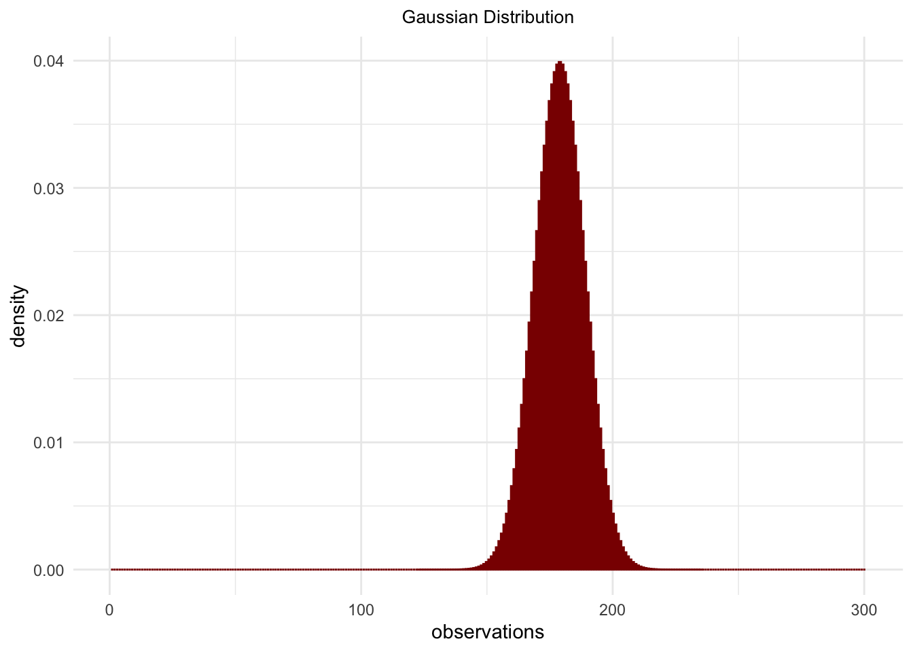
observations <- 1:300
normalProbability <- pnorm(observations, mean = 174, sd = 10)
sum(normalProbability)## [1] 126.5normalProbability <- data.frame(observations = observations,
density = normalProbability)
ggplot(normalProbability,
aes(x = observations,
y = density)) +
geom_bar(stat = "identity",
fill = 'darkred',
color = 'darkred') +
ggtitle("Gaussian Cumulative Distribution") +
ylab("P(height <= x)") +
theme_bw() +
theme(panel.border = element_blank()) +
theme(plot.title = element_text(hjust = .5, size = 10))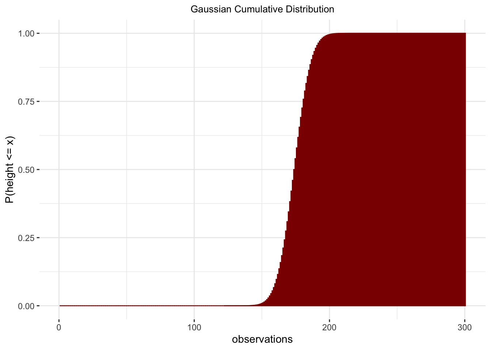
Here are some examples of the normal distribution in nature and society:
Heights of Individuals: The distribution of heights in a population often follows a normal distribution. The majority of individuals tend to cluster around the mean height, with fewer individuals at both extremes (very tall or very short).
IQ Scores: Intelligence quotient (IQ) scores are often approximated by a normal distribution. In a large population, most individuals fall around the average IQ score, with fewer individuals having scores that deviate significantly from the mean.
Body Mass Index (BMI): The distribution of BMI scores, which relates to body weight and height, tends to approximate a normal distribution. In a given population, most individuals have BMI values near the mean, with fewer individuals having extremely high or low BMI values.
Test Scores: In educational settings, the distribution of test scores often follows a normal distribution. When a large number of students take a test, their scores tend to form a bell curve, with most scores clustering around the average and fewer scores at the extremes.
Errors in Measurements: Errors in measurement, such as in scientific experiments or quality control processes, often exhibit a normal distribution. This phenomenon is known as measurement error or random error, where the errors tend to center around zero with decreasing frequency as the magnitude of the error increases.
Natural Phenomena: Many natural phenomena, such as the distribution of particle velocities in a gas, the sizes of raindrops, or the distribution of reaction times in human perception, can be modeled by the normal distribution.
Error Terms in Regression Analysis: In regression analysis, the assumption of normally distributed error terms is often made. This assumption allows for efficient statistical inference and hypothesis testing.
6 The sampling distribution of the sample mean
Let’s assume that some quantity in reality follows a Normal
Distribution with \(\mu\) = 100 and
\(\sigma\) = 12, and draw many, many
random samples of size 100 from this distribution:
n_samples <- 100000
sampleMeans <- sapply(1:n_samples,
function(x) {
mean(rnorm(n = 100, mean = 100, sd = 12))
})
sampleMeans <- data.frame(sampleMean = sampleMeans)
ggplot(sampleMeans,
aes(x = sampleMean)) +
geom_histogram(binwidth = .1,
fill = 'white',
color = 'purple') +
ggtitle("Sampling Distribution of the Sample Mean") +
xlab("Sample Mean") +
theme_bw() +
theme(panel.border = element_blank()) +
theme(plot.title = element_text(hjust = .5, size = 10))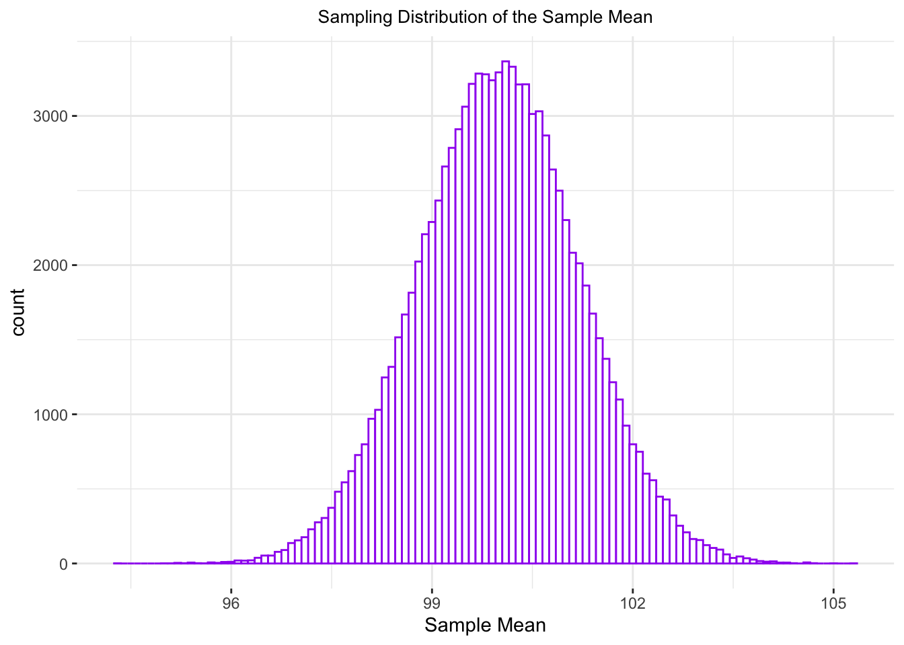
What is the standard deviation of sampleMeans?
sd(sampleMeans$sampleMean)## [1] 1.201998And recall that the population standard deviation was defined to be 12. Now:
12/sqrt(100)## [1] 1.2And this is roughly the same, right?
The standard deviation of the sampling distribution of a mean - also known as the standard error - is equal to the standard deviation of the population (i.e. the true distribution) divided by \(\sqrt(N)\):
\[\sigma_\widetilde{x} = \sigma/\sqrt(N)\]
and that means that if we know the sample standard deviation
Standard deviation (SD) measures the dispersion of a dataset relative to its mean. Standard error of the mean (SEM) measured how much discrepancy there is likely to be in a sample’s mean compared to the population mean. The SEM takes the SD and divides it by the square root of the sample size. Source: Investopedia, Standard Error of the Mean vs. Standard Deviation: The Difference
7 The Central Limit Theorem
In the following set of numerical simulations we want to do the following:
- define a probability distribution by providing a set of parameters, say \(\mu\) and \(\sigma^2\) for the Normal, or \(\lambda\) for the Poisson, or n and p for the Binomial;
- each time we pick a distribution, we take
- a random sample of size
sampleN <- 100, - compute the mean of the obtained random numbers, and then
- we repeat that either 10, or 100, or 1,000, or 10,000 times (varies
as:
meanSizes <- c(10, 100, 1000, 10000)).
Let’s see what happens:
sampleN <- 100
meanSizes <- c(10, 100, 1000, 10000)Poisson with \(\lambda = 1\):
# - Poisson with lambda = 1
lambda = 1
# - Set plot parameters
par(mfrow = c(2, 2))
# - Plot!
for (meanSize in meanSizes) {
poisMeans <- sapply(1:meanSize,
function(x) {
mean(rpois(sampleN, lambda))
}
)
hist(poisMeans, 50, col="red",
main = paste0("N samples = ", meanSize),
cex.main = .75)
}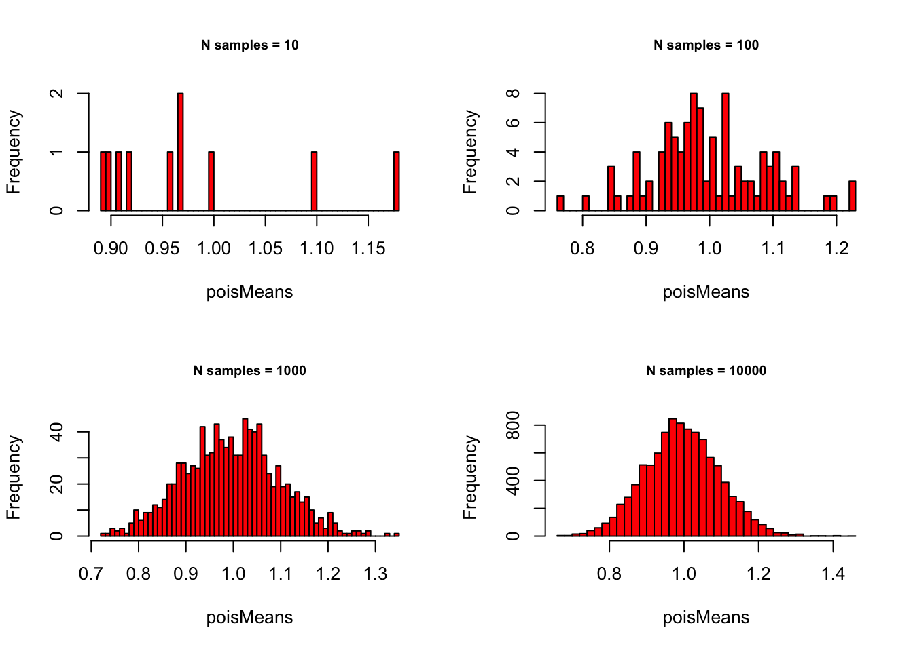
Poisson with \(\lambda = 2\):
# - Poisson with lambda = 2
lambda = 2
# - Set plot parameters
par(mfrow = c(2, 2))
# - Plot!
for (meanSize in meanSizes) {
poisMeans <- sapply(1:meanSize,
function(x) {
mean(rpois(sampleN, lambda))
}
)
hist(poisMeans, 50, col="red",
main = paste0("N samples = ", meanSize),
cex.main = .75)
}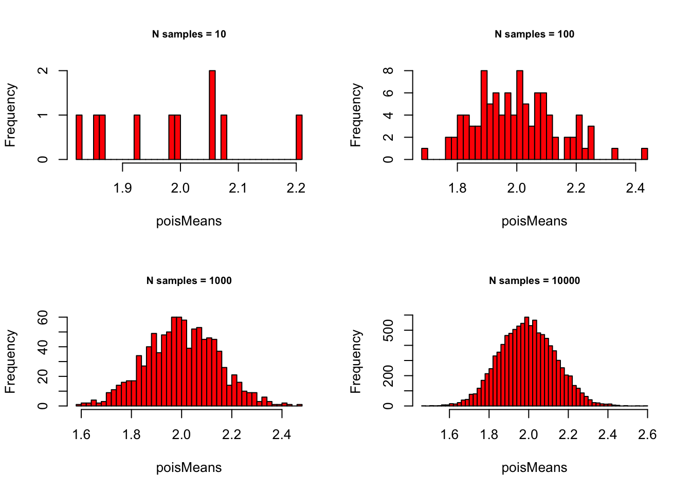
Poisson with \(\lambda = 10\):
# - Poisson with lambda = 10
lambda = 10
# - Set plot parameters
par(mfrow = c(2, 2))
# - Plot!
for (meanSize in meanSizes) {
poisMeans <- sapply(1:meanSize,
function(x) {
mean(rpois(sampleN, lambda))
}
)
hist(poisMeans, 50, col="red",
main = paste0("N samples = ", meanSize),
cex.main = .75)
}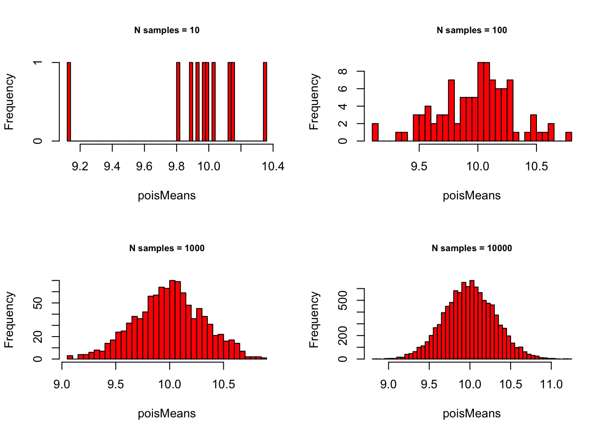 Binomial with p = .1 and n = 1000:
# - Binomial with p = .1 and n = 1000
p = .1
n = 1000
# - Set plot parameters
par(mfrow = c(2, 2))
# - Plot!
for (meanSize in meanSizes) {
binomMeans <- sapply(1:meanSize,
function(x) {
mean(rbinom(n = sampleN, size = n, prob = p)) }
)
hist(binomMeans, 50, col="darkorange",
main = paste0("N samples = ", meanSize),
cex.main = .75)
}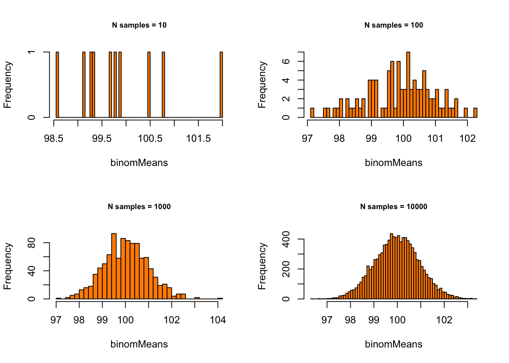
Binomial with p = .5 and n = 1000:
# - Binomial with p = .5 and n = 1000
p = .5
n = 100
# - Set plot parameters
par(mfrow = c(2, 2))
# - Plot!
for (meanSize in meanSizes) {
binomMeans <- sapply(1:meanSize,
function(x) {
mean(rbinom(n = sampleN, size = n, prob = p))
}
)
hist(binomMeans, 50, col="darkorange",
main = paste0("N samples = ", meanSize),
cex.main = .75)
}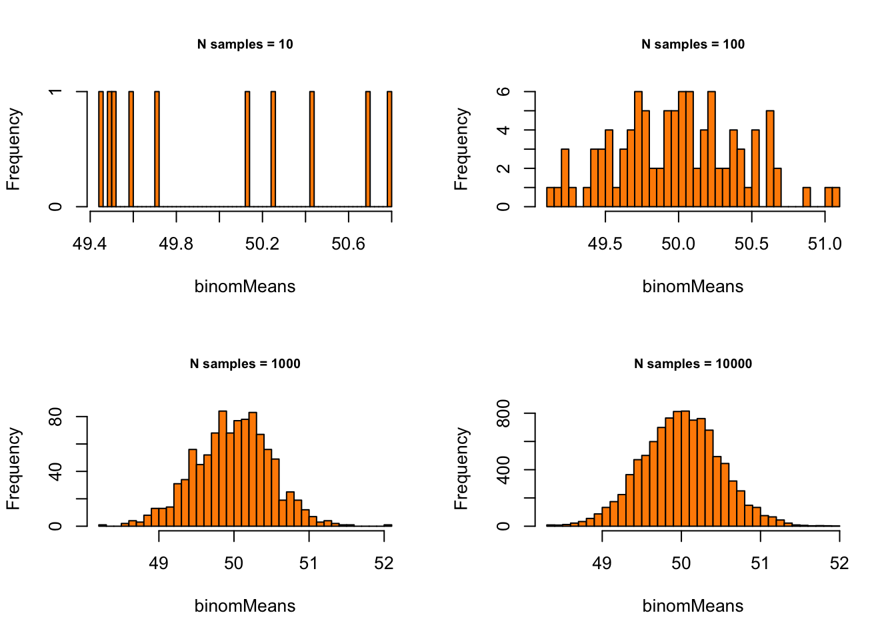 Normal with \(\mu = 10\) and \(\sigma = 1.5\):
# - Normal with mean = 10 and sd = 1.5
mean = 10
sd = 1.5
# - Set plot parameters
par(mfrow = c(2, 2))
# - Plot!
for (meanSize in meanSizes) {
normalMeans <- sapply(1:meanSize,
function(x) {
mean(rnorm(sampleN, mean = mean, sd = sd))
}
)
hist(normalMeans, 50, col="lightblue",
main = paste0("N samples = ", meanSize),
cex.main = .75)
}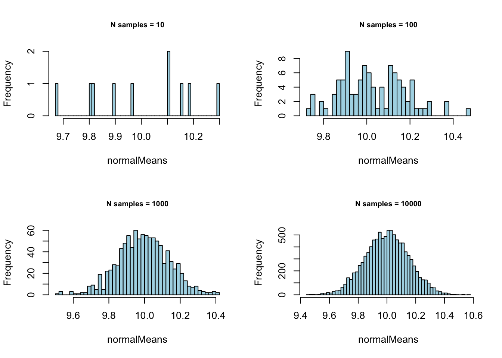 Normal with \(\mu = 175\) and \(\sigma = 11.4\):
# - Normal with mean = 175 and sd = 11.4
mean = 175
sd = 11.4
# - Set plot parameters
par(mfrow = c(2, 2))
# - Plot!
for (meanSize in meanSizes) {
normalMeans <- sapply(1:meanSize,
function(x) {
mean(rnorm(sampleN, mean = mean, sd = sd))
}
)
hist(normalMeans, 50, col="lightblue",
main = paste0("N samples = ", meanSize),
cex.main = .75)
}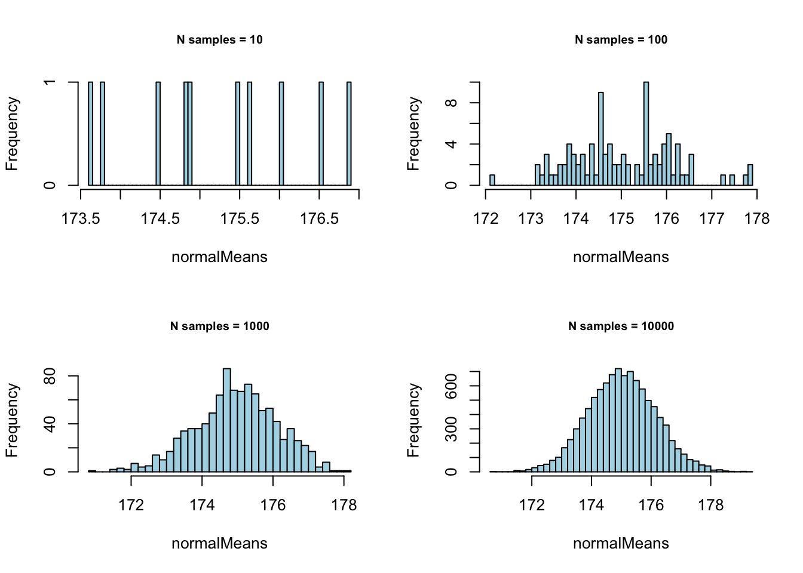 Normal with \(\mu = 100\) and \(\sigma = 25\):
# - Normal with mean = 100 and sd = 25
mean = 100
sd = 25
# - Set plot parameters
par(mfrow = c(2, 2))
# - Plot!
for (meanSize in meanSizes) {
normalMeans <- sapply(1:meanSize,
function(x) {
mean(rnorm(sampleN, mean = mean, sd = sd))
}
)
hist(normalMeans, 50, col="lightblue",
main = paste0("N samples = ", meanSize),
cex.main = .75)
}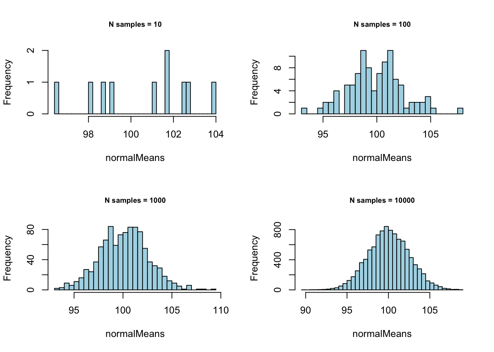
What happens if we start increasing sampleN and keep the
number of samples at some decent number, say
meanSize = 10000?
sampleN <- c(10, 100, 1000, 100000)
meanSize <- c(10000)Poisson with \(\lambda = 3\):
# - Poisson with lambda = 1
lambda = 3
# - Set plot parameters
par(mfrow = c(2, 2))
# - Plot!
for (sampleN in sampleN) {
poisMeans <- sapply(1:meanSize,
function(x) {
mean(rpois(sampleN, lambda))
}
)
hist(poisMeans, 50, col="red",
main = paste0("Sample N = ", sampleN),
cex.main = .75)
}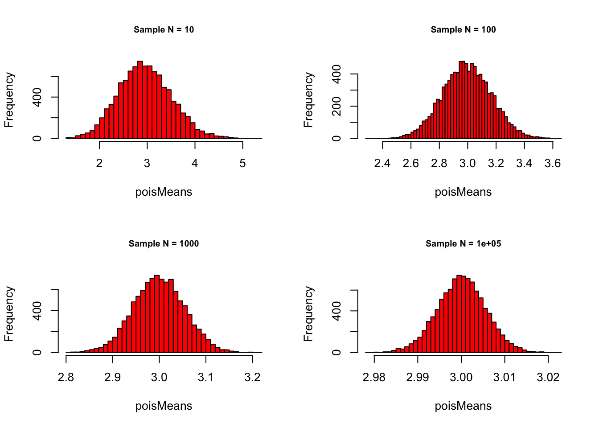
Normal with \(\mu = 10\) and \(\sigma = .75\):
sampleN <- c(10, 100, 1000, 100000)
meanSize <- c(10000)# - Normal with mean = 10 and sd = .75
mean = 10
sd = .75
# - Set plot parameters
par(mfrow = c(2, 2))
# - Plot!
for (sampleN in sampleN) {
normMeans <- sapply(1:meanSize,
function(x) {
mean(rnorm(sampleN, mean = mean, sd = sd))
}
)
hist(normMeans, 50, col="lightblue",
main = paste0("Sample N = ", sampleN),
cex.main = .75)
}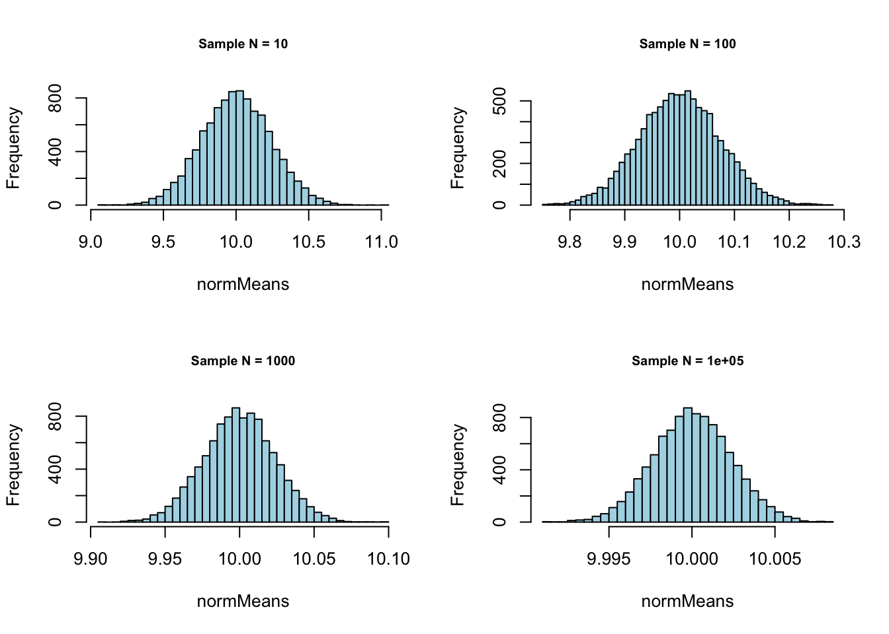
All the same as the number of samples increase? Exactly:
Central Limit Theorem. In probability theory, the central limit theorem (CLT) establishes that, in many situations, when independent random variables are added, their properly normalized sum tends toward a normal distribution (informally a bell curve) even if the original variables themselves are not normally distributed. The theorem is a key concept in probability theory because it implies that probabilistic and statistical methods that work for normal distributions can be applicable to many problems involving other types of distributions. Source: Central Limit Theorem, English Wikipedia, accessed: 2021/02/17
Does it always work? Strictly: NO. Enter Cauchy Distribution:
# - Cauchy with location = 0, scale = 1
# - set plot parameters
par(mfrow=c(2,2))
# - plot!
for (meanSize in c(100, 1000, 10000, 100000)) {
cauchySums <- unlist(lapply(seq(1:meanSize), function(x) {
sum(rcauchy(1000, location = 0, scale = 1))
}))
hist(cauchySums, 50, col="orange",
main = paste("N samples = ", meanSize, sep=""),
cex.main = .75)
}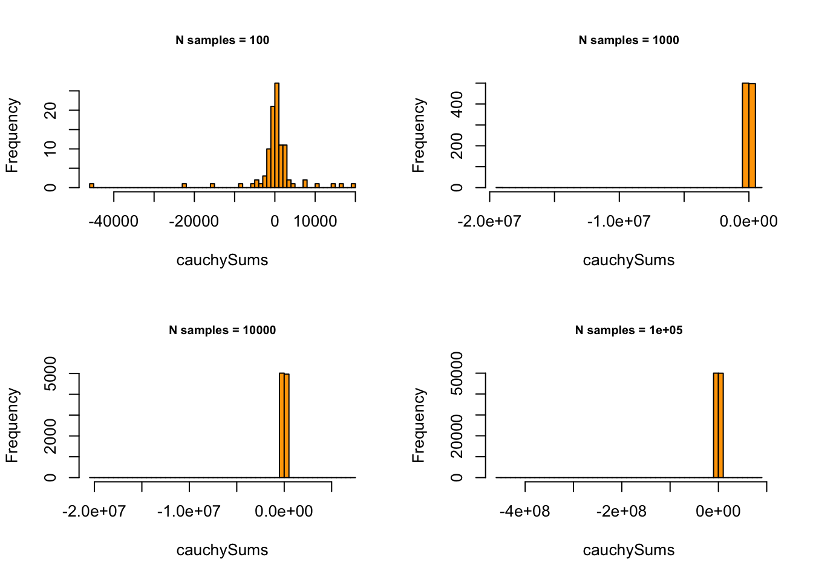
… also known as The Witch of Agnesi…
Further Readings
- Probability concepts explained: probability distributions (introduction part 3) by Jonny Brooks-Bartlett, from Towards Data Science
- Grinstead and Snell’s Introduction to Probability (NOTE: The Bible of Probability Theory). Definitely not an introductory material, but everything from Chapter 1. and up to Chapter 9. at least is (a) super-interesting to learn, (b) super-useful in Data Science, and (c) most Data Science practitioners already know it (or should know it). Enjoy!
- More on the Kolmogorov-Smirnov Test
- More on QQ plots w. {ggplot2}
- More on Probability Functions in R: 2.1 Random Variables and Probability Distributions from Introduction to Econometrics with R
Some Introductory Video Material
R Markdown
R Markdown is what I have used to produce this beautiful Notebook. We will learn more about it near the end of the course, but if you already feel ready to dive deep, here’s a book: R Markdown: The Definitive Guide, Yihui Xie, J. J. Allaire, Garrett Grolemunds.
License: GPLv3 This Notebook is free software: you can redistribute it and/or modify it under the terms of the GNU General Public License as published by the Free Software Foundation, either version 3 of the License, or (at your option) any later version. This Notebook is distributed in the hope that it will be useful, but WITHOUT ANY WARRANTY; without even the implied warranty of MERCHANTABILITY or FITNESS FOR A PARTICULAR PURPOSE. See the GNU General Public License for more details. You should have received a copy of the GNU General Public License along with this Notebook. If not, see http://www.gnu.org/licenses/.

Contact: goran.milovanovic@datakolektiv.com

Impressum
Data Kolektiv, 2004, Belgrade.